目录
大厂晋升指南¶
目录
晋升原则¶
主管的做事风格可能有很多种:
有的主管特别关注业务目标是否达成，所以会花很多时间跟产品经理和项目经理沟通交流；
有的主管特别关注团队形象，要求所有对外承诺的事情都一定不能延期、一定不能出问题，所以会特别重视进度、质量和风险等情况的跟进和监控；
有的主管特别关注自己的职位爬升，所以团队成员对他来说，只是一种可利用的资源
晋升原则:
1. 第一条原则，主动原则
主动做事的人，比等着别人安排的人更容易晋升
a. 主动找主管沟通工作
b. 主动找别人沟通，了解更多信息
2. 成长原则：不断挖掘成长点
a. 对于踩了坑、犯了错的事情，要复盘，毕竟教训的印象是非常深刻的；
b. 对于顺利的事，也要主动去挖掘可以成长的点，不然即使把事情做好了，能力提升也不大。
3. 价值原则：学习为公司产出价值的技能
让能力为公司产出价值的人，比空有一身能力的人更容易晋升
价值就是目标，找到最重要的那个目标，就是让公司觉得你有价值。
成长就是方法，具体方法就是做正确的事，而不是单纯的做事。
主动就是执行，找准目标和方法之后，需要有动力去推动落地执行。
如果说一定要学习一些在职业生涯各个阶段都有用的东西，那肯定不能是具体的某个技术，而是一些抽象的原则、思想。比如设计模式，设计原则、UNIX编程艺术里面谈到的原则。我特别推崇《UNIX编程艺术》这本书，里面谈到的原则真的是非常有用的，但是如果你没有一定的经历，其实看到里面讲的原则你也体会不深，实际遇到选择的时候，你也不一定敢按照它说的来做。
晋升逻辑¶
第一条逻辑：提前做下一级别的事
第二条逻辑：做好当前级别的事
通用的晋升步骤
第 1 步，按照晋升原则的指导，在当前级别拿到好的结果，为公司创造价值，同时把当前级别要求的能力提升到精通程度（比如从 P6- 到 P6+），这样你才有机会成为晋升备选人员。
第 2 步，到了精通程度之后，对照下一级别的要求来提升自己的各种能力（比如到了 P6+ 之后，按照 P7- 的要求来提升自己），为可能的晋升机会做好准备。
第 3 步，主动寻找工作机会，尝试做下一个级别事情（比如提升了 P7 的能力之后，找 P7 级别做的事情来做，争取成为负责人，主导事情的推进和落地），继续拿到好的结果，向主管证明你具备下一级的能力。
第 4 步，拿到工作结果之后申请晋升，向评委介绍你做过的事情，展示相关的能力和结果，证明自己具备了下一级别要求的能力。
即: 先把当前级别要求的能力提升到精通水平，接着按照下一级别的能力要求继续提升，然后主动寻找工作机会，尝试下一个级别的工作，最后拿着工作成果申请晋升。
每个人向上走的过程中肯定会遇到很多坑，有些坑需要避掉，但有些坑应该是不得不踩的吧？就像人只有经历些事，才会变得成熟，那如果是这样，有哪些坑不建议绕过呢:
凡是有利于你成长但是很可能犯错的坑你都不要绕过。例如：
1. 线上出问题：你不负责做方案设计就不会出错，但只有真正你设计的方案线上运行，并且出了问题，你才能更加深刻的理解设计背后的很多原则和技巧
2. 被主管批评：你什么都完全按照主管要求来做，做事很稳妥，可能不会被主管批，但是你自己就学不会自己来做分析判断和选择，因此要敢于主动去承担事情，虽然可能犯错；
3. 被人骂或者喷：你无法讨好每个人，而且只有你做好了，才会有人来喷你，因此不要担心被喷，要担心没人喷
能力模型¶
COMD 能力模型:
4 种复杂度 +3 个维度
COMD 的核心指导思想是:
通过事情的复杂度来判断能力的高低，级别越高，所做的事情复杂度也越高
为了清晰地描述不同能力层级的差异，COMD 能力模型还进一步地明确了复杂度，具体包括:
1. 规模复杂度
规模越大，节点越多，节点间的关系越复杂，而且节点间的关系复杂度是指数增长的
2. 时间复杂度
时间复杂度是指和时间跨度有关的复杂度
3. 环境复杂度
环境复杂度是指和环境不确定性有关的复杂度
环境的不确定性具体分为环境的稳定性、环境的透明性和环境的可预见性 3 个方面：
a. 环境的稳定性，指环境变化的速度快慢
b. 环境的透明性，指是否能够明确地获取环境相关的信息
c. 环境的可预见性，指是否会发生完全无法预料的黑天鹅事件
4. 创新复杂度
创新复杂度是指和创新程度有关的复杂度。
常见的创新包括理论的创新、思想（或者说方法）的创新和技巧的创新。
理论创新的复杂度要高于思想创新，而思想创新的复杂度又高于技巧创新。
以高可用技术领域为例：
a. FLP 原理和 CAP 定理属于理论创新。
它们奠定了分布式高可用设计的基础和边界，无论是缓存系统、存储系统、批处理系统、流式处理系统还是采用微服务架构的业务系统等，都不能跳出这两个理论的约束和限制。
b. 批处理和流处理属于思想创新。
对于大数据技术来说，一开始 Google 提出的批处理思路开启了大数据时代，而后来 Storm 开启了流处理这个新的技术领域。
c. 实现 Exactly Once 特性属于技巧创新。
开源框架 Flink 使用 Chandy-Lamport 算法，实现了流处理 Exactly Once 的特性，能够实现消息精确投递，避免重复消息导致业务出错。
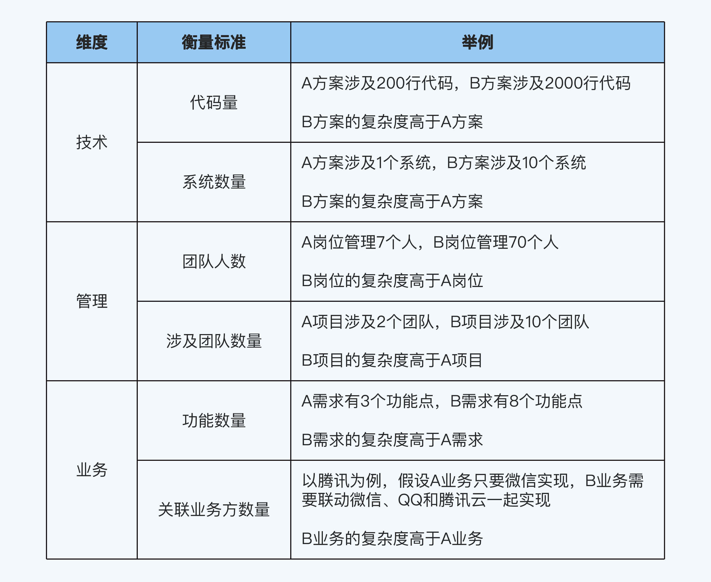
1.一些常见工作维度的规模复杂度¶
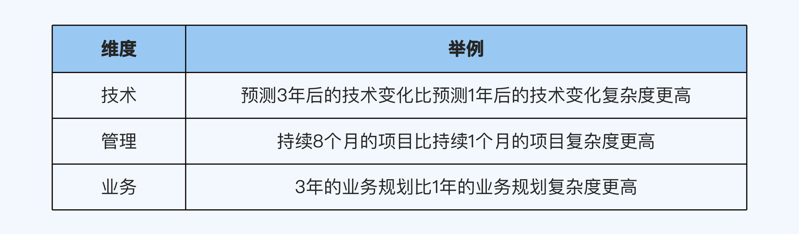
2.一些常见工作维度的时间复杂度¶
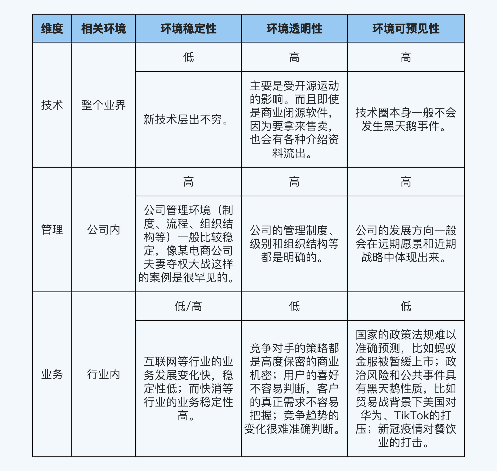
3.一些常见工作维度的环境复杂度¶
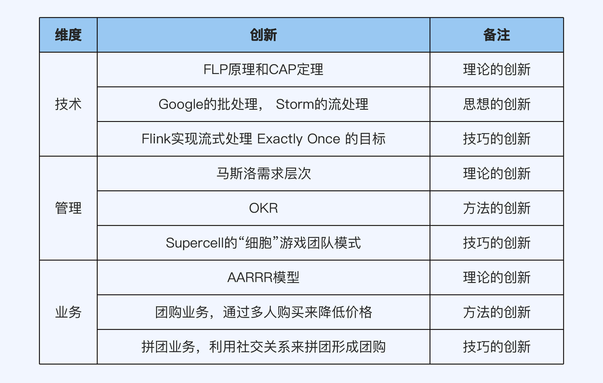
4.一些常见工作维度的创新复杂度¶
各项工作的复杂度排序是这样的:
从0到1创造系统>架构重构>项目方案设计>编码实现
Note
“系统思考”的确是写在 P7 级别的能力描述里，但它不是 P7 级别才有的能力特征。实际上，P6 以上的级别都要求“系统思考”，区别只是思考的范围不同，也就是规模复杂度不同而已。

以 B2C 电商业务开发为例，在某些大厂，不同级别“系统思考”的范围如图所示：对于 P6 来说，系统思考的范围是某个需求，需要考虑需求的合理性、设计的可扩展性和上线后的稳定性等问题。对于 P7 来说，系统思考的范围是单个系统，需要考虑的是单个系统的架构设计、架构重构和技术选型等问题。对于 P8 来说，系统思考的范围是某个领域，需要考虑的是领域的发展趋势、架构演进、团队组织结构等问题。对于 P9 来说，系统思考的范围是多个关联的业务域组成的业务线，需要考虑业务发展趋势、架构演进、团队组织结构等问题。¶
Note
“前瞻判断”虽然写在了 P8 的能力描述里，但其实 P6 以上都有前瞻性的要求，区别只是在于前瞻范围、时间跨度和面临的环境不同而已。这些因素就分别对应了规模复杂度、时间复杂度和环境复杂度。
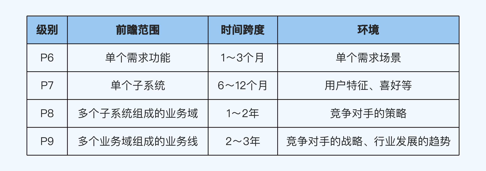
以 B2C 电商业务开发为例，某些大厂 P6～P9 级别的前瞻性要求如表所示¶
职级档次¶
P5/P6：专业工匠:
核心能力是完成任务
P5 需要在别人的指导下完成工作，而 P6 可以独立完成工作
P7/P8：乐团指挥:
核心能力是指挥团队
P7 只需要指挥单个团队，而 P8 往往要指挥多个团队
P7 负责1-3个子系统，而 P8 负责子领域里的所有子系统
“团队”，包括两种类型：
1. 狭义上的团队
担任 Team Leader 的 P7，一般带 3～10 人的专业团队，
也就是组织结构概念上的团队，核心职责是团队管理。
2. 广义上的团队
作为团队骨干的 P7，他们虽然不是 Team Leader，
但是一般也会负责某个项目或者专项小组（比如 Android 性能优化小组和前端效能提升小组），
带 3～5 人的虚拟团队。他们不承担团队管理职责，只关注小组目标的实现。
分为三个阶段：
1. 分析阶段
对应乐团指挥的总谱研究，对总谱进行深入细致的研究分析，识别和标注演奏的重点、难点和风险点。
2. 计划阶段
对应排练准备，明确演奏需要的人手和乐器，根据乐团情况制定排练计划。
3. 落地阶段
对应正式排练，拆解具体排练步骤（比如个体练习、分声部练习和全体排练等），抓好每一个关键环节的落实，做好风险预防措施，推动整个乐团完成演奏。
P9/P10：电影导演:
核心能力是导演作品
特点:
1. 具有一定的规模
2. 是总决策者
3. 总负责人
P9 和 P10 的核心差异在于成果质量:
P9: 负责的业务结果实现了既定的业务目标
P10: 负责的业务结果按照某个标准（用户量、收入和权威机构的测评等），进入了业界前列，有一定的名气和影响力
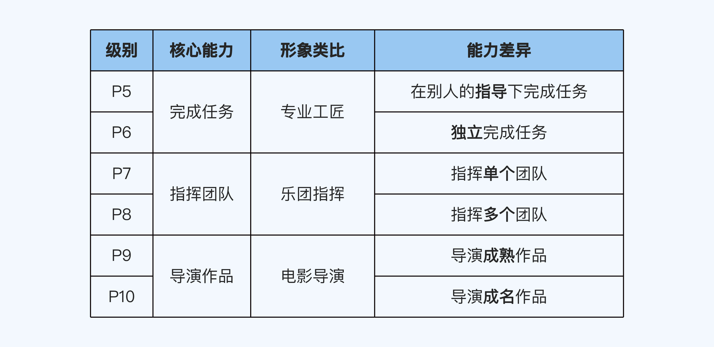
P5～P10 的 6 个等级职责简介¶
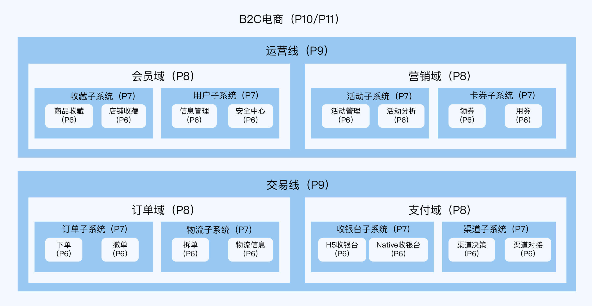
P5～P10 的 6 个等级职责简介¶
P7¶
技术：精通团队相关技术¶
核心要求是精通团队相关技术:
1. 精通团队已经用到的技术
2. 熟悉团队可能用到的技术
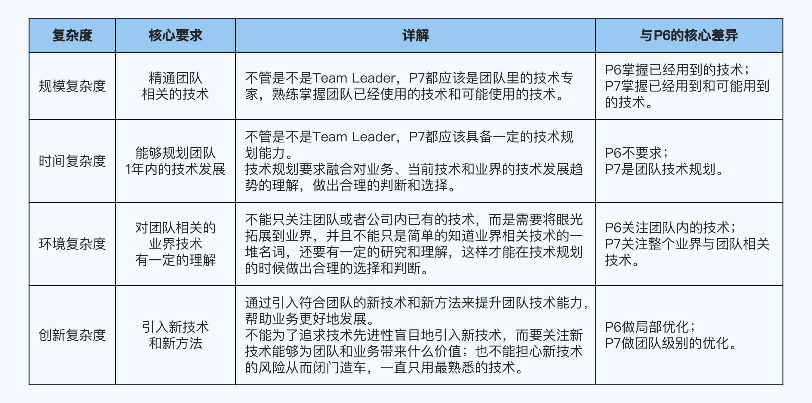
P7 级别的技术详细要求¶
Note
注意: P7 虽然是“团队专家”，但并不意味着必须是团队里的技术 Top 1。一般来说，如果团队人数在 5 人以内，P7 的确基本上都是 Top 1。但如果团队人数是 5～10 人，那么担任 Team Leader 的 P7 只要在 Top 3 以内就行了。
Note
不要因为管理而丢掉技术。你的技术也不能太弱，否则不但带团队会吃力，晋升也会受到影响。
如果说 P6 要重点提升技术深度（不但知道 what，还知道 why），那么 P7 还要重点提升技术宽度（不但知道 why，还知道 which）。
业务：关注业务整体¶
在业务维度，P6 更关注业务细节，而 P7 更关注业务整体。这里的业务范围是自己团队负责的业务。
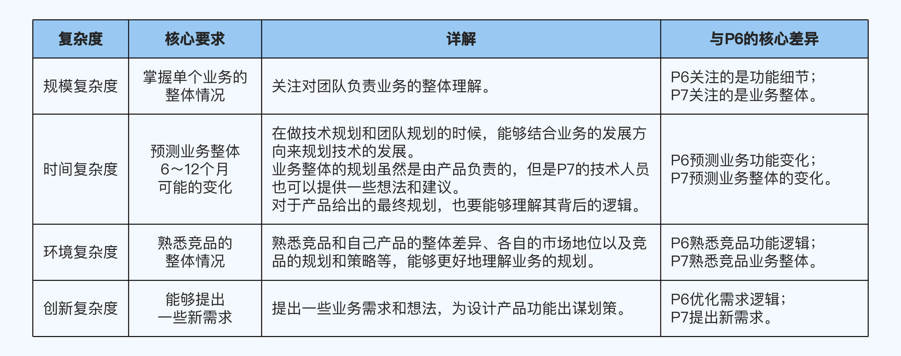
P7 级别的业务详细要求¶
基础方法论:
1. 用户特征回答的问题是，我们的用户是谁，换句话说，我们的用户属于哪一类人群。要怎么分类呢？常见的方法有两种，第一种是按照属性来划分，比如学历、收入、年龄和地域等；第二种是按照场景来划分，比如网购、K 歌、旅游、外卖和游戏等。
2. 用户价值回答的问题是，用户为什么要用我们的产品，换句话说，我们产品的好处体现在哪里。它可以体现在能满足用户的某些需求，也体现在跟其他产品比起来有竞争优势。比如电商三巨头淘宝、京东和拼多多，淘宝大而全，京东物流快，拼多多价格便宜。
3. 获客方式回答的问题是，怎么让用户来用我们的产品。用户并不会无缘无故就自动找上门来，我们必须通过宣传把他们给招揽过来。以 2C 业务为例，常见的获客方式有品牌广告、社交推荐、事件营销、SEO、线下地推和红包返利等。
4. 获利方式回答的问题是，我们怎么赚钱。毕竟公司是以赚钱为第一要务的，就算现在不赚钱，也是为了将来能赚更多的钱。常见的获利方式有广告费、会员会费、增值服务、服务费和销售产品等。
要求:
1. 知道行业总的用户规模，自己的业务总的用户量，用户的特征分布。
2. 熟悉行业的竞品，包括行业的排名、竞品的数据以及竞品间的差异和对比。
3. 熟悉常见的获客手段和效果指标（ROI、转换率和留存率等），知道对自己的业务来说效果最好的 3～5 个获客手段以及原因。
4. 熟悉常见的获利手段和效果指标（数值和比例等），知道对自己的业务来说最核心的 3～5 个获利来源。如果负责的是用户子系统这种不直接产生收入的业务，则可以了解自己的业务对收入会有什么影响。
管理：指挥 10 人以内的小团队¶
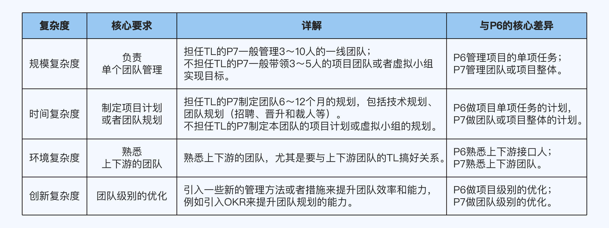
P7 级别的管理详细要求¶
管理要避免走极端:
1. 事必躬亲
2. 甩手掌柜
系统化地掌握管理的基本技能:
找好管理和技术的平衡点
三七比例法。也就是说，平均下来管理工作时间占 30%，技术工作时间占 70%
可以根据实际情况灵活变化，比如项目紧的时候二八开，年终总结汇报的时候四六开
“多发出自己的声音”，发声音很多种方式:
写文章、培训、担任虚拟团队负责人、做演讲、
开会的时候提出自己的看法、评审的时候发表自己的意见
P7要考虑的是多纬度。技术对业务有什么价值?这个技术解决了什么业务问题?这些都需要可量化度量。阿里讲把“虚事做实，实事做虚”，技术、业务的规划抽象能力，技术对业务的赋能以及形成闭环的能力，都需要P7的同学考虑。
P8¶
Note
与 P7 最大的不同点是指挥多个团队达成目标。基本都是带团队的，需要负责一块完整的业务。这里的业务规模可以理解为创业公司的一个初创业务的规模，所以 P8 去创业公司基本就是 CTO 了。
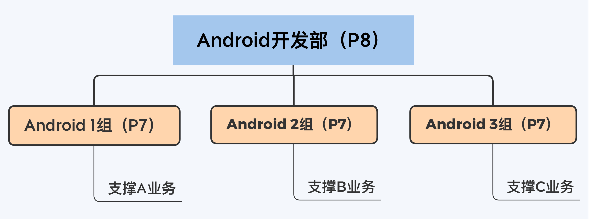
横向模式，指的是 P8 带领的团队的专业领域相同，横向支撑多个业务。¶
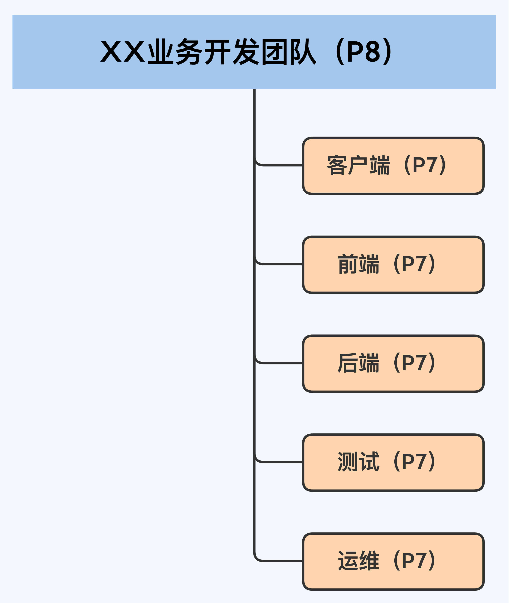
纵向模式，指的是 P8 带领的团队的专业领域不同，端到端地纵向负责同一业务。¶
技术：精通领域相关技术¶
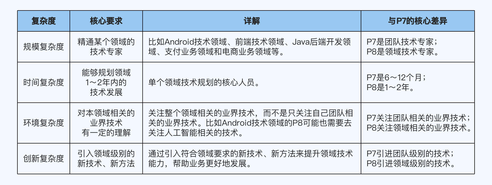
P8 级别的技术详细要求¶
Note
P8 提升技术能力的关键是技术深度和技术宽度齐头并进
“领域”是怎么划分的呢？业界一般有两种方法:
一是按照技术领域划分，比如 Android 开发、Java 业务开发和大数据等。
二是按照业务领域划分，比如推荐业务、广告系统和支付业务等。
业务：熟悉多个业务或精通端到端业务¶
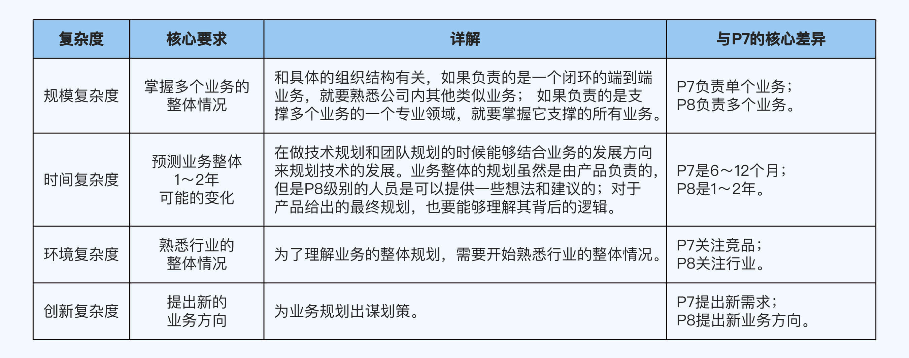
P8 级别的业务详细要求¶
Note
P5/P6 核心能力的关键词是完成“任务”，而 P7/P8 核心能力的核心是指挥团队达成“目标”。它们的差别在于：任务是从过程的角度来衡量的，而目标是从结果的角度来衡量的。
管理：核心是抓重点¶
P8 级别的管理详细要求¶
跟 P7 相比，P8 的管理范围更大，可能存在以下困难:
团队人员数量变多，不可能熟悉每个人了。
项目数量大大增加，不可能参加每个项目了，包括需求评审、方案设计等。
需要参与的各种管理事项大大增加。
Note
核心思路就是要学会抓重点。我们必须认识到，P8 的管理方式不能再像 P7 那样偏重细节和执行方面的管理（否则时间和精力根本不够用），而是应该关注重点事项的管理。
P8 阶段管理的三大重点:
1. 团队管理：搭建梯度
每个核心人员都至少有一个备份人员
2. 目标管理：参与制定，保证理解
3. 技术管理：关注演进
P8 级别精力分配的经验:
1. 如果带横向模式的团队，可以参考 532 标准，也就是技术 50%、管理 30%、业务 20%
2. 如果带纵向模式的团队，可以参考 433 标准
P9¶
业务核心或者行业专家，基本算是打工的巅峰了，比如著名的安全大神云舒，在阿里时是 P9。各路业界专家、科研大牛进阿里也基本都是从 P9 开始定级的，比如网上出名的王垠，他受邀加入阿里时，面试的岗位也是 P9 级别。
技术：跨领域整合能力¶
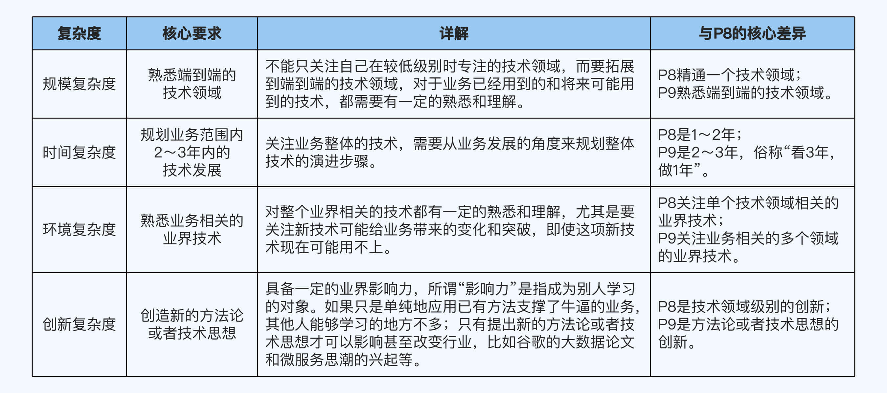
P9 级别的技术详细要求¶
不要陷入到太细的技术细节中，比如某个工具的使用、API 如何调用等，因为这样做花费的时间太多，而且对于做关键技术决策并没有什么帮助。相反，你需要从宏观层面熟悉多个领域的技术，包括技术原理、优缺点、适应场景和业界应用等:
a. 环式学习法就是一个利器，通过闭环的思维大大提高技术广度的提升效率 b. 另外一个提升重点就是关注和学习新技术，比如人工智能、区块链和 VR/AR 等，因为新技术可能会给业务带来新的突破。
业务：从理解规划到亲自导演¶
P9 负责的业务范围一般可以分为三类:
1. 独立的一个或者一类产品
比如阿里云上的云数据库 Redis 版
2. 某个行业中的一个或者一类业务
如美团 App 是一个覆盖“本地生活”行业的 App中的某个具体的业务
3. 某个中台的一个或者一类业务域
Note
从理解业务规划到做出业务规划并拿到有突破性的结果，这是 P9 相对 P8 的核心提升点之一，也是 P8 晋升 P9 很难的一个因素。
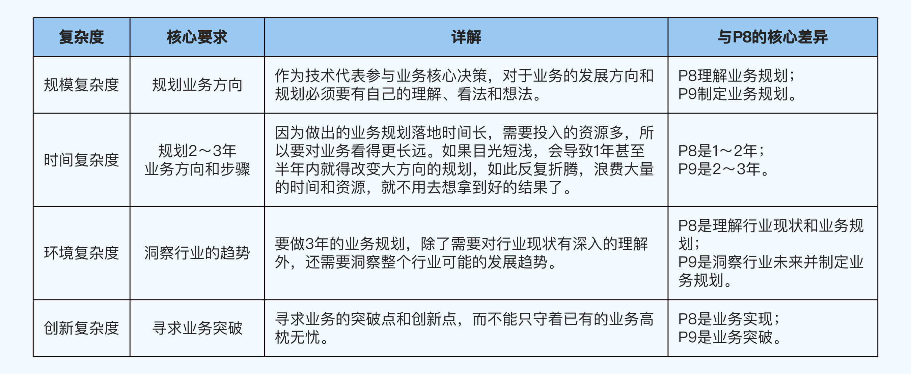
P9 级别的业务详细要求¶
管理：授权但不要放羊¶
P9 级别的管理详细要求¶
P10/P11¶
现在科大讯飞的副总裁刘鹏，当初拿阿里 offer 时给了 P10；Facebook 的 HipHop 项目负责人赵海平加入阿里的时候，级别也是 P10。
这个级别既需要天才，还要有运气。比较有名的 P11，有江湖人称 “道哥” 的吴翰清，他是阿里首席安全科学家、阿里云安全负责人；还有阿里合伙人多隆，他是淘宝的第一代程序员，号称淘宝的 “扫地僧”。
外企职级: senior->staff->principal->distinguished
面评技巧-PPT框架¶
好的晋升 PPT 具体要求如下:
1. 结构清晰：
a. 用金字塔原理或思维导图来讲解思路
b. 用时间线模型来讲解发展历程
c. 用架构图来讲解系统
d. 用流程图来讲解业务
e. 用 UML 类图来讲解代码
2. 重点突出：
在 PPT 上，将核心内容提炼成 3～5 点，让评委能够快速理解你要讲的内容范围。
无论是总体上要讲的事项还是每个事项的亮点，都应该遵循这个思路。
3. 与实际讲述内容匹配：
你要讲什么，PPT 就配合呈现什么，最忌讳的就是讲的内容和 PPT 内容不相符。
Note
标准的晋升 PPT 应该由三个部分构成
一. 自我介绍:
1～2 页的自我介绍，包括三块内容：
1. 基本信息
也就是你的姓名、所在团队和业务、当前级别、申请晋升的级别等信息
2. 当前职责
也就是你当前主要的职责，比如:
参与或负责哪块业务、是否带团队、团队规模多大、
担任了什么关键岗位（比如项目负责人、系统 owner）等
3. 工作经历
也就是以前在哪里待过，做过哪些重要项目
格式是：
在职时间 / 公司名称 / 最高职位
比如：
2004～2009 华为技术有限公司 高级软件开发工程师
二. 自述材料:
10～15 页的自述材料，用来向评委展现自己能力
总体的写作指导思想就是金字塔原理，
围绕 “我达到了 xx 级别的要求” 这 1 个中心主题，
设计 3～5 个核心论据，
每个论据分为背景、任务、行动和结果 4 个部分展开。
整个结构就像金字塔一样，中心明确，层次分明，逻辑清晰。
Note
这一部分是晋升 PPT 的核心内容，篇幅最长，地位也最重要
三. 辅助内容:
1～3 页的辅助内容，包括两部分：
1. 自我总结
用能力矩阵或者区块的形式，把你的核心能力再提炼总结一下，让评委有一个整体的印象
核心能力 3～5 项最合适
2. 发展规划
结合自己的发展目标、业务的发展趋势、自己的不足等情况，设定一个综合的发展方向和路径
PPT 写作¶
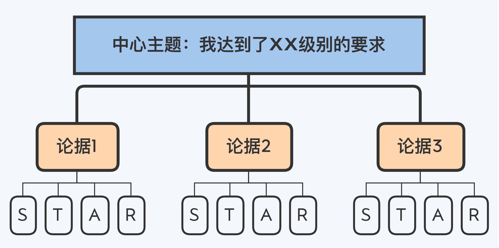
这个模型就像金字塔一样，中心明确，层次分明，逻辑清晰，一共包括 3 个层级。¶
顶部是中心主题，自述材料的中心主题很明确，就是向评委证明你的能力达到了目标级别的要求。
中间是论据，也就是你用来证明自己的能力确实达到要求的依据，常见的论据包括：你负责或者参与过的项目，你带过的团队，你负责的系统或者业务。
底部是 STAR，也就是 Situation（情景）、Task（任务）、Action（行动）和 Result（结果）4 个部分。
技巧一：把 PPT 当成提词器:
PPT 上面展示的内容不是给你念的，而是用来提示你要讲的内容范围的。
一方面是提示你自己，这一页 PPT 应该讲哪几个关键点，至于具体的详细内容，不用放上去，只需要从你的嘴说出来就行了。
另一方面也是提示评委，告诉他们你将要讲什么，这样评委就能够快速收集自己头脑中跟这些内容相关的知识、技能和经验，一边听你讲，一边理解并形成初步判断。
技巧二：围绕能力要求提炼论据:
论据可以分为两类。
1. 第一类是核心论据，和目标级别的能力要求强相关，并且能够让评委眼前一亮，一般需要提炼 3～5 项
提炼核心论据是有套路的，参考 COMD 模型，
根据目标级别的能力要求去找相关的复杂度高的工作。
这些工作往往会有一些共同的特点，比如
持续时间长、规模大、不确定性高、有一定挑战性或者创新性等
2. 第二类是辅助论据，从侧面说明你的能力，起到锦上添花的作用，不用太多，只要 1～3 项就行
一些常见的辅助论据包括:
参加业界技术大会（证明自己主动拓宽技术视野）、
在业界技术大会上演讲（证明自己有一定的业界影响力）、
发表文章、
出版书籍、
承担一些虚拟组织的组长（比如学习小组和交流小组）
参与开源项目等
技巧三：用 STAR 方法来描述论据:
1. Situation（背景）
不要把项目 Word 文档里的内容直接贴上去，而是应该提炼 1～3 条关键内容摘要。
如:
随着行业自媒体的发展，大量质量参差不齐的内容涌现，
如何让优质内容快速到达目标用户成为一个很大的挑战。
最好提炼为：
自媒体内容推荐
2. Task（任务）
描述你在这件事情里面的角色和负责的任务。
不要把整个项目写上去，因为评委关注的是 “你在项目中发挥的作用”，而不是 “整个项目有多牛逼”
3. Action（行动）
要讲清楚自己做了什么，展现了哪些能力，这是最关键的部分
a. PPT 只要展示你提炼的 3～5 个核心点就行了，其他内容得靠你自己讲出来。
不要把 Word 文档的内容直接贴到 PPT 上
尽量用架构图、流程图、类图和思维导图等形式来展现，
然后提炼几个关键内容用文字展现出来，其他详细内容自述的时候讲出来即可，
“开局一张图，内容主要靠说”
b. PPT 上只要写 “做了什么”，用不着写 “为什么这么做”。
因为评委肯定会在答辩环节问到这一点，而且跟你进行多次的交流探讨
4. Result（结果）
大部分人在这个环节犯的错误就是太 “虚”，只有定性的描述，没有定量的描述。
正确的做法是 “虚实结合”，而且重点在 “实”，
所有事情的结果都应该围绕效率、效果、质量和成本这 4 个维度进行『量化评估』。
量化评估的原则:
所谓量化评估，就是把要评估的内容转化成可以量化的数据来呈现。
呈现的数据要遵循以下 3 个原则：
1. 先有基数后有比例
A 和 B 两个项目都是 “渗透率从 20% 提升到 30%”，
其中 A 项目的日活用户是 1000 万，而 B 项目的日活用户只有 10 万
2. 用绝对值而不是相对值
A 项目是 “渗透率提升 200%”，B 项目是 “渗透率提升 50%”，
单纯看相对值的话，肯定是 A 项目更好
但：
A 项目是 “渗透率从 2% 提升到 6%”，B 项目是 “渗透率从 20% 提升到 30%”
3. 将数值转换为 “钱”
A 项目是 “渗透率从 2% 提升到 6%，增加广告收入 3000 万”，
B 项目效果是 “渗透率从 20% 提升到 30%，增加会员收入 30 万”
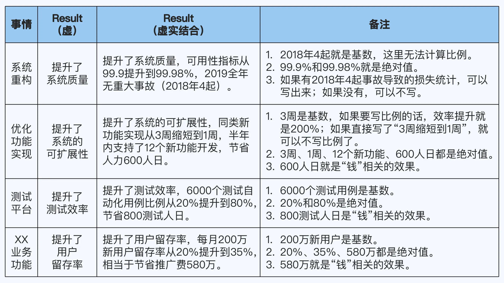
通过量化评估实现虚实结合的例子¶
Note
PPT 只需要写提炼出来的重点和关键词，详细内容要靠你自己讲， 但展示结果的 PPT 是个例外 ，你一定要完整写出来。也就是说，你的 PPT 里不要写这个表格里 “Result（虚）” 这列的内容，而要写 “Result（虚实结合）” 这一列的内容。
面评技巧-PPT 讲解¶
做一个演讲者，而不是一台复读机，对照 PPT 上的关键词或者语句，适当展开说明。
按照有效页数量控制时间，一个有效页 1～3 分钟，总时间 20～30 分钟。
自述环节讲 What，告诉评委你做了什么，结果如何；答辩环节讲 Why，告诉评委你做事的依据，背后的思考、逻辑、方法论、经验和教训。
无论多忙，正式面评前都要安排内部模拟面评，提前适应并规避问题。
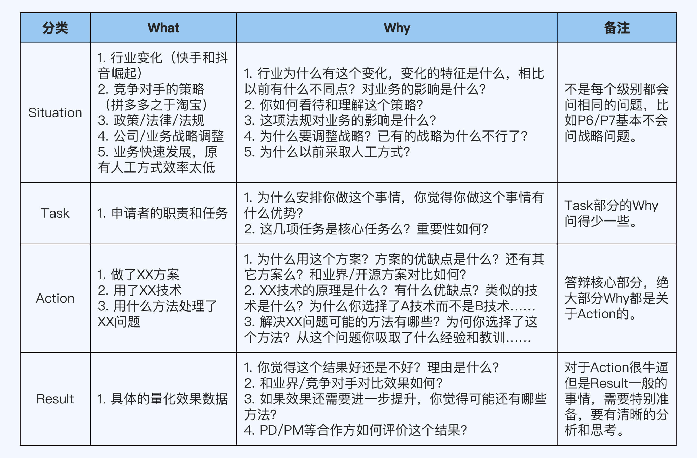
常见的 What、Why 表格¶
面评技巧-PPT 答辩¶
技巧 1：明确问题类型，回答关键内容:
两个很常见的错误:
1. 急于回答
2. 越多越好
正确的做法是:
不要急于回答，先明确问题属于哪种类型，想想评委的关注点是什么，
然后整理这方面的关键内容，最后再组织语言开口回答
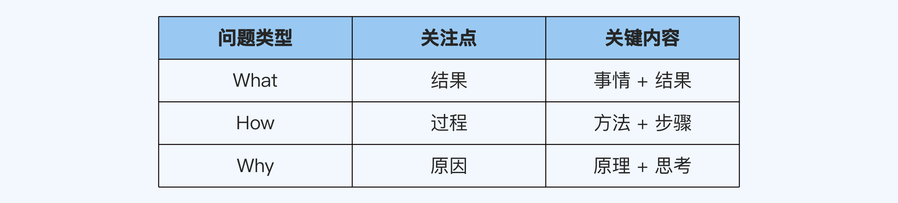
常见的问题类型和它们对应的关注点和关键内容¶
What 类问题:
关键内容是“做了什么事情 + 拿到什么结果”， 其中: 事情部分最好用 3 句话能够描述清楚， 结果部分尽量用数据来描述。 这类问题，你用几句话就回答清楚就行了，不要展开长篇大论，把时间控制在 30 秒以内。
How 类问题:
关键内容是“做事情的方法 + 实施的步骤”， 其中: 方法部分要点出关键词，也就是评委提问的引子， 而步骤部分要有逻辑，常见的时间逻辑、空间逻辑和业务逻辑等都可以。 如: 你在晋升 PPT 里写的是“采用微服务重构系统”， 并且给出了拆分前后的架构图， 然后介绍说：“我们采用微服务的方法将原来耦合的业务系统拆分成 4 个微服务子系统……” 那么评委可能会问：“你们的微服务落地过程，具体是怎么做的？” 在这个例子中: 方法部分的关键词就是「微服务」， 步骤部分的逻辑则可以是「业务优先级」， 按照优先级从低到高的顺序进行拆分， 第一步拆分 A 服务，第二步拆分 B 服务，第三步拆分 C 服务， 总共拆分成 4 个服务（原有服务 + A + B + C）。 然后，你再补充一下在拆分服务的过程中，你遇到了哪些挑战和困难， 分别是怎么应对的，这样就回答得差不多了。 通常情况下，How 类问题用 1～2 分钟来回答比较合适。Why 类问题:
关键内容是“技术原理 + 思考过程” a. 技术相关的 Why 类问题， 一般回答相关原理，包括技术理论、技术原则和技术方法论等， 比如高可用的 CAP 理论、网络编程的多路复用、浏览器渲染原理等。 例如问：“为什么 Netty 性能高？” 你就需要回答和 Reactor 网络编程模式和零拷贝等原理相关的内容 从回答技巧上说，比较简单。 因为技术原理都是业界公认的，你能不能回答好，关键在于平时有没有积累，毕竟现场编也编不出来。 b. 决策相关的 Why 类问题 一般回答决策背后的思考，包括分析过程、分析方法、分析框架和决策标准等。 c. 综合类问题，跟技术和决策都有关系 你的回答既要包括原理，也要包括思考。 比如评委问：“为什么你们选择 Memcache，而不是 Redis？” 你既需要回答 Memcache 和 Redis 在技术上的核心差异， 也需要回答在具体业务选择 Memcache 的原因。 如: “我们的业务需要做文本和图片内容缓存，数据结构简单，但可能会出现几百 K 大小的缓存对象，在缓存内容比较大的时候，Redis 的单进程模式会存在多连接 IO 操作互相影响的问题，性能不如 Memcache 的多线程模式。” 通常情况下，Why 类问题也是用 1～2 分钟来回答比较合适。 就算你能回答的内容很多，也不要一上来就滔滔不绝，而是每次都应该回答几个要点。 如果评委有兴趣，就会继续问下去；如果评委认为你已经达到要求了，就不会再问了。
技巧 2：答不上来就想办法回到熟悉的领域:
遇到不会的问题，正确的做法是，不要编、不要蒙，老老实实承认不会，
然后引导评委关注自己其他的技能，回到自己熟悉的领域。
因为晋升的时候，你根本不用着证明自己全知全能，只要向评委展示出你的核心能力就够了。
可以说：“抱歉，这部分我没有深入研究，但是我在 XX 技术上花费了比较多的时间，进行了深入的研究。”
引导评委关注的技能必须是你真正有信心的，不要随口一说又给自己挖坑。
如果实在不知道怎么引导，那就干脆不要引导，承认对这个问题不懂就行了。
技巧 3：发生争执就及时终止话题:
“这部分内容我可能还没有研究透彻，后面我自己再深入研究一下。”
Note
核心的思想就是，你不需要证明自己什么都会，只要在有限的时间里，充分地展现自己的核心能力就行了。
面评技巧-注意点¶
Note
提升技术的时候，很容易掉到一个陷阱里，那就是贪多求全。你可能看了很多技术，其他人说起某个技术点的时候，你都有印象。但其实你只是蜻蜓点水，并没有深入学习。重点抓住跟当前工作内容强相关的技术点和技术套路，深入学习和研究，重点提升技术深度。如果有精力，你再去拓展学习一些暂时用不到、但以后很可能会用到的技术。
工作量评估¶
工作量评估方法——WBS 分解法:
把需求拆解为多项小任务，单独评估每个小任务的工作量，然后汇总
Note
WBS 分解法的原理是，通过把项目工作按阶段可交付成果分解成更小的、更易于管理的组成部分，来提升项目管理的效率。避免过于乐观：加 Buffer。Buffer 系数可以在 1.2～1.6 之间浮动，一般根据项目的复杂度决定。全新的业务功能 Buffer 会高一些，在已有业务功能上修改时 Buffer 会低一些。
工作量评估方面，我们的做法和WBS相似，列了一个子任务技术难点清单，然后分级，每个级别按照斐波那契数赋予难度系数。分析任务和方案时，开发人员也按照这个清单，评估工作量，避免主观评估了。
面评技巧-技术大会¶
QCon 技术大会、架构师峰会、GMTC（全球大前端技术大会）、GOPS（全球运维大会）和人工智能峰会
通过参加技术大会，快速地掌握本领域相关技术在业界的应用情况。尤其是领头羊企业（BAT 和 TMD 等）的技术积累和经验，具有很好的借鉴意义。同时，你只要关注一下大会上讲得最多的技术是哪些，就能够识别出业界整体的技术发展趋势。
面评技巧-其他¶
画系统架构图技巧:
1. 不要用 UML 画架构图，用 PPT
2. 首先明确你要画的是部署架构、业务架构、应用架构三者中的哪一种，不要在一个架构图中混着画
3. 颜色不要超过 3 种
4. 先画模块，再调整大小、位置、颜色这些
学习方法-找时间：海绵学习法¶
早晨半小时
通勤半小时
上班头半小时
睡前半小时
周末2小时
学习方法-学什么：三段分解法¶
1. 分解“等级”
参考专业领域的等级划分标准或公司的职级体系，
在当前状态和大牛之间划分出 3～5 个中间等级，
把 10 年的宏大目标分解成 2～3 年的一段目标
2. 分解“技能”
a. 参考 COMD 能力模型，整理出当前级别和下一级别的能力要求矩阵
b. 直接查看公司的招聘要求
将这些要求整理为一个思维导图，详细列出每个技术点
专项提升某个技能的持续时间既不能太短，也不能太长，一般建议在 6 个月左右。
3. 分解“行动”
参考同行在网上发布的经验和朋友的建议，确定提升单项技能的 3～5 个具体行动
把二段目标细化为 1～2 个月的三段目标
4. 执行
最终执行计划的时候要落实到周，但是制定计划的时候分解到月就行了，
这样做的好处是，计划调整起来更加方便灵活
学习方法-怎么学¶
1. P5/P6/P7 主要提升技术深度
2. P7/P8 主要提升技术宽度
3. P8/P9 主要提升技术广度
1. 链式学习法适合提升技术深度，通过自顶向下逐步深入的方式，将关联技术逐一掌握。
2. 比较学习法适合提升技术宽度，通过比较相似的知识或者技能，全面掌握单个领域的技术。
3. 环式学习法适合提升技术广度，通过学习业务闭环流程中相关技术，全面掌握多个领域的技术。
链式学习法¶
Note
链式学习法是让知识形成锁链，环环相扣，主要用来提升技术深度。
链式学习法常见的方式有两种:
1. 第一种是自顶向下、层层关联，打通一项技术的领域分层
2. 第二种是由表及里、层层深入，打通一项技术的细节分层
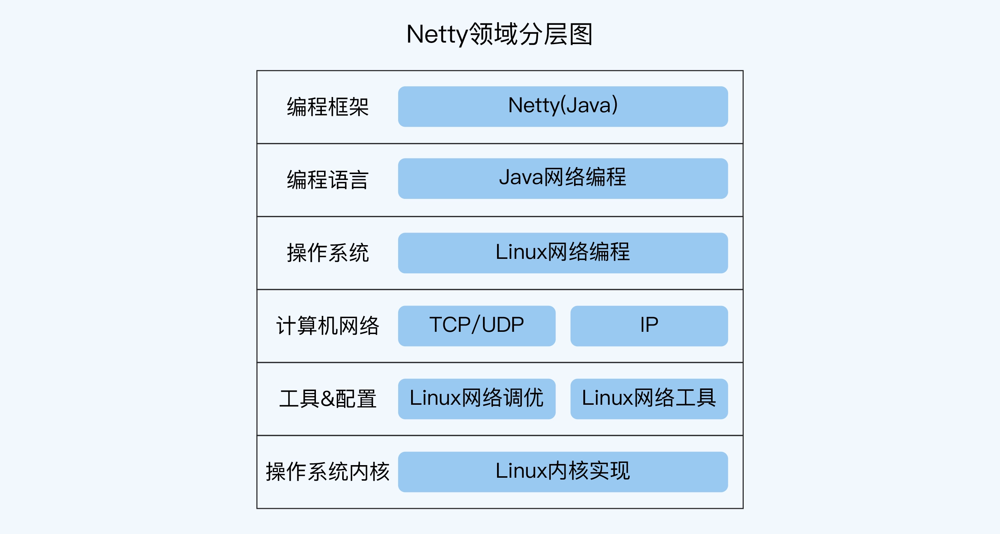
“领域分层图”: 要么上层依赖下层，比如 Netty 依赖 Java 网络编程，Java 网络编程在 Linux 上又依赖 Linux 提供的网络编程接口；要么下层是上层的应用和实现，比如 TCP/IP 是原理，而 Linux 网络调优和工具是 TCP/IP 的具体应用。¶
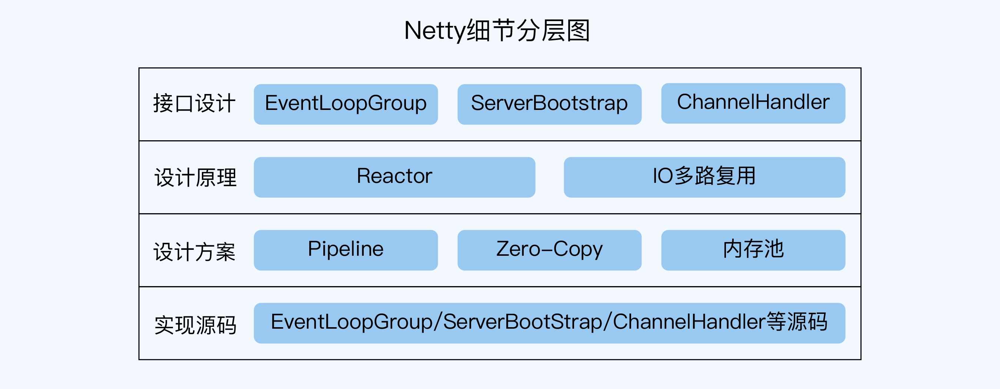
“细节分层图”¶
链式学习法的步骤:
1. 明确一项技术的深度可以分为哪些层
就是画出 “领域分层图” 和 “细节分层图”
尝试画图本身就是一个梳理结构、强化认知的过程
2. 明确你自己要学到哪一层
学得太浅，达不到提升深度的目的；
学得太深，又会耗费太多的时间和精力
3. 明确每一层应该怎么学
在领域分层图中:
越往上越偏应用，实际工作中用得越多，
越往下越偏原理（包括相关的工具和配置），实际工作中用得越少。
所以总的原则是:
在上层投入更多时间，更关注细节和熟练使用，
在下层投入相对少的时间，更加关注原理和简单应用。
链式学习法的优点:
1. 促使我们主动提升
采用链式学习法，你就会意识到需要把刚刚自己用到的技术作为切入点，
画出完整的领域分层图和细节分层图，然后逐一攻破，这样才能提升深度，达到精通水平
2. 将知识和技能系统化
明确知识和技能点之间的关联关系，有助于更好的理解和应用这些知识和技能
比较学习法¶
比较学习法：提升技术宽度
Note
所谓比较学习法，就是横向比较同一个领域中类似的技术，梳理它们异同，分析它们各自的优缺点和适用场景。比较学习法是横向对比，让选择有理有据，主要用来提升技术宽度。
比较学习法的步骤:
1. 整理领域关键技术点
先用链式学习法掌握某个领域的一项技术，将这个领域的关键技术点整理成表格。
2. 整理不同技术的差异点
基于整理好的技术点，学习这个领域的另一项技术，将它们在技术点上的差异整理成思维导图。
3. 整理差异点背后的原理和对应用场景的影响
找出差异较大的技术点，将背后的原理和对应用场景的影响整理成表格。
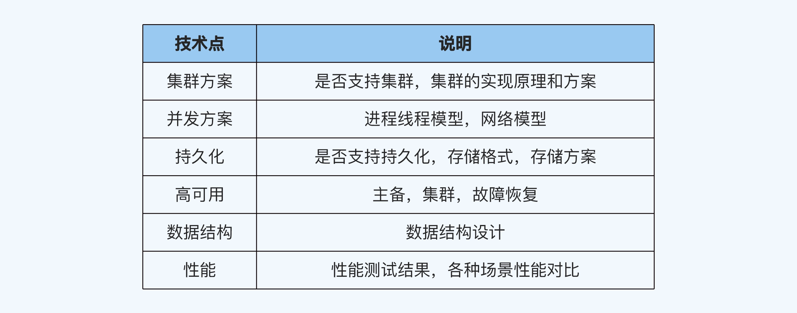
1.先用链式学习法掌握 Memcache 技术，整理出缓存领域的 6 个关键技术点。¶
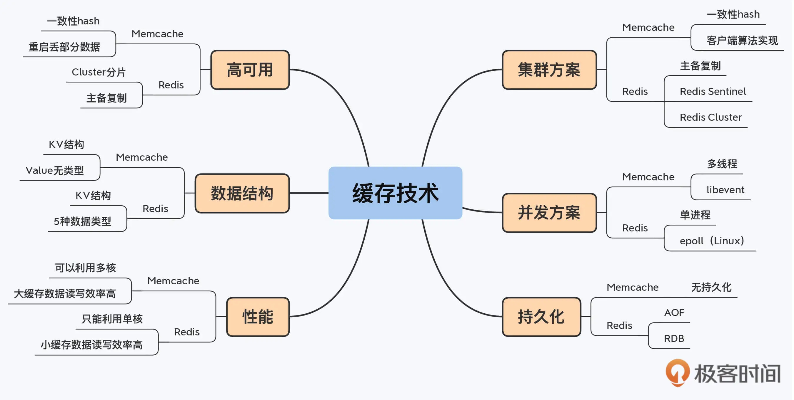
2.基于这 6 点快速掌握 Redis 技术，整理出 Memcache 和 Redis 在这些点上的差异。¶
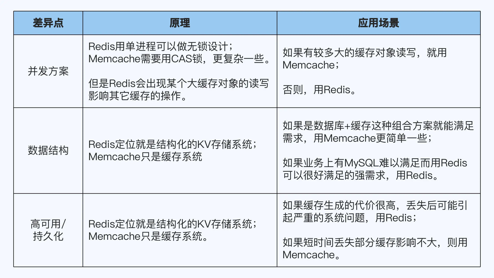
3.找出差异较大的技术点，包括并发方案、数据结构、高可用和持久化，整理出它们背后的原理和对应用场景的影响。¶
比较学习法的优点:
1. 学得快
当你掌握了一项技术之后，再去同一个领域的另一项技术，就不需要从 0 开始了
2. 学得全
整理关键技术点和制作思维导图的过程，
会促使你把一个领域的技术体系化，更全面、更系统地掌握这个领域。
3. 学得深
从差异点到背后的原理再到应用场景的思考过程，会让你对技术的取舍之道理解得更深，
在每一次技术选择时都能给出让人信服的理由。
环式学习法¶
环式学习法：提升技术广度
Note
所谓环式学习法，就是构建一个完整的闭环过程，将多个领域的 “鱼” 一网打尽。
技术上常见的 “功能环”，它代表某个功能的处理过程
业务上常见的 “业务环”，它代表某个业务的处理步骤
管理上常见的 “流程环”，它代表某件事情的处理步骤
Note
环式学习法不但可以用来提升技术广度，也可以用来提升业务能力和管理水平。
环式学习法的步骤:
1. 把闭环画出来
a. 将完整的闭环分为几个关键的环节，然后标出每个环节的关键内容
b. 每个环节又会涉及不同的技术
2. 由近及远，逐步攻克闭环上的各个节点
同一个闭环，不同领域的人学习顺序也是不同的
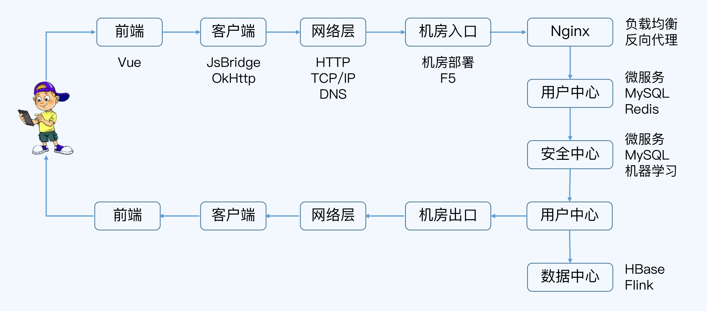
以一个最简单的 “用户登录” 为例的「功能环」¶
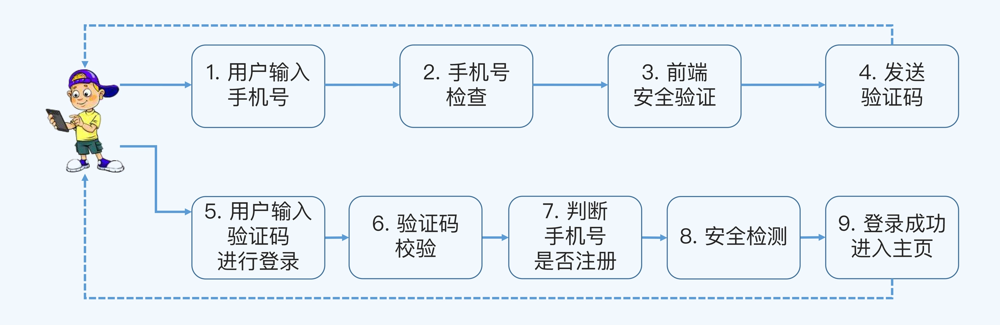
用户登录的业务环¶
环式学习法的优点:
1. 培养全局视野
2. 避免盲目地广撒网却捞不到鱼
Important
平时不需要背太多细节，但知道大概范围和深入方向，等真的要用到细节的时候，能够快速的钻研进去。
学习方法-保证效果¶
Play 学习法¶
Note
Play 学习法是通过模拟实践中的场景进行训练。Play 学习法的独特优势在于，可以模拟各种在实践工作中很难出现、但只要出现就可能导致故障的场景。
主要分为三个步骤:
1. 按照链式学习法的方式学习某项技术
2. 列举常见的场景，搭建模拟场景
3. 在模拟场景进行测试、体验和练习
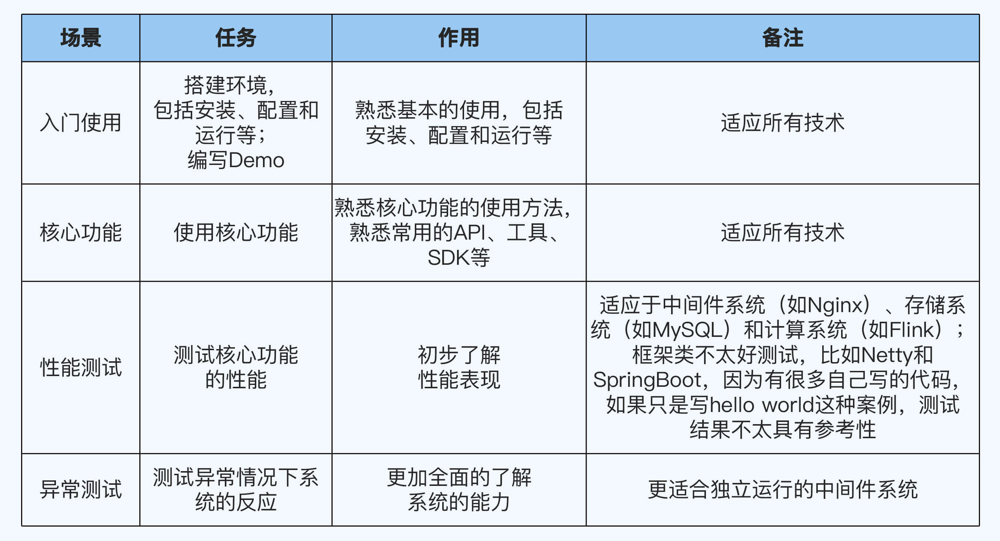
常见的模拟场景以及相应的作用¶
Note
如果说精通一项技术是 100 分的话，通过链式学习法你可以达到 60 分，通过 Play 学习法你可以达到 70 甚至 80 分，但如果想达到 80 分以上，实践是必不可少的。
Teach 学习法¶
Note
Teach 学习法是通过教别人来提升自己。
Teach 学习法包括两种形式:
1. 写作
2. 培训
写作对学习的帮助主要体现在以下两个方面:
第一，写作有助于系统地整理技术体系。
第二，写作有助于了解细节。
Note
写作是需要投入时间的，都学的话时间确实会不够用。核心的指导原则就是，看技术和自己工作的相关度，对于强相关的核心技术，自己写文章来学；而对于弱相关的非核心技术，可以通过阅读资料来学习。
培训:
1. 要完成一场培训，你需要写培训材料
培训材料的准备过程就是一个写作的过程，
写 PPT 这类培训材料，跟写 Word 文档比起来，也更能够锻炼你的总结、归纳和提炼的能力。
写作带给你的帮助，培训也可以提供
2. 培训需要你在有限的时间内讲清楚一个主题
你必须对这个主题掌握到一定的程度才可以做到，
这就会强迫你去思考跟主题有关的各种信息和可能的问题
3. 培训过程中，你会和听众进行各种交流，
这些交流本身既能够促进你对培训内容的理解，也能够锻炼你的临场反应能力
做事方法-总¶
做事能力的判断标准:
1. 具备闭环思维
做事的时候不能只是完成任务了事，而是要从端到端的角度去思考和落地。
端到端的过程都可以分为事前规划、事中执行和事后总结三个阶段
2. 有方法论指导
做事的时候不只是靠经验教训的历史积累，还有一套系统的流程或者模板。
3. 能拿到好的结果
判断你的方法论好不好，其实还是要看最后的结果好不好，给公司带来了多少价值
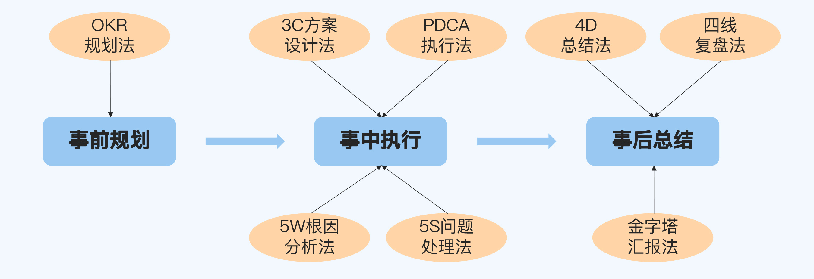
做事方法¶
做事方法-KPI&OKR¶
KPI 的缺点:
1. 只适合标准化的、目标稳定的工作
2. 会给团队带来不好的风气
《绩效主义毁了索尼》——天外伺朗
KPI 带来的问题:
1. 故意定低指标：
几乎所有人都把指标定得比较低，因为这样容易实现。
2. 只顾短期效益：
追求眼前利益的风气蔓延，短期内难见效益的工作都受到轻视，比如质量检验和老化处理等。
3. 一切只看指标：
上司不把部下当有感情的人来对待，一切都用指标来衡量。
4. 工作和考核本末倒置：
绩效考核需要把各种工作量化，但是很多工作无法简单地量化，
所以公司在绩效考核上花费了大量的精力和时间，而在真正的工作上却敷衍了事，本末倒置。
KPI 的困惑:
1. 程序员的工作要怎么量化？
2. 技术团队怎么体现工作贡献呢？
3. 有风险的工作谁愿意做？
技术团队规划的常见角度:
1. 解决问题的角度
2. 优化性能
a. 团队优化
比如提升开发效率和质量，提升团队成员战斗力
b. 技术优化
比如将 App 的崩溃率从 0.5% 优化到 0.3%，
将后台接口响应时间从 50ms 优化到 30ms
3. 引入新技术
Note
但是，从这些角度来做 KPI 规划，往往拿不到很好的绩效结果。主要原因在于，这些都是团队和技术的角度，没有结合业务目标，所以就算你做得很好，价值也不一定能体现出来。
Note
【区别】KPI 的关键词是 Indicators，而 OKR 的关键词是 Objectives。换句话说，KPI 关注的是数据指标，而 OKR 关注的是业务目标。代表的是两种思维方式：一个是“我要履行什么职责”；另一个是“我要做成什么事情”。
实例说明区别:
1. 假如你是程序员，
如果关注指标，你想到的是代码行数、bug 数和单元测试覆盖率；
如果关注目标，你想到的是解决产品的卡顿问题和实现精准推荐。
2. 假如你是足球运动员
如果关注指标，你想到的是进球数、助攻数、跑动距离和比赛场次；
如果关注目标，你想到的是夺冠、四强和保级。
3. 假如你是曹操专车的业务负责人
如果关注指标，你想到的是司机数量、订单数和乘客数；
如果关注目标，你想到的可能是让曹操专车成为网约车行业第二
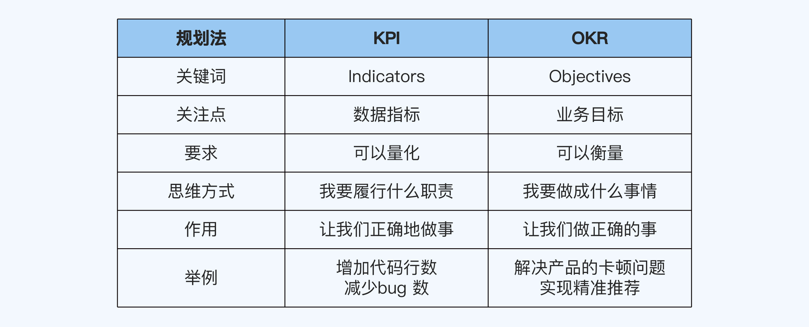
KPI 让我们正确地做事，OKR 让我们做正确的事。¶
Note
OKR 的核心思想是聚焦，不是面面俱到。一线的技术人员不推荐 OKR 来规划和考核，一线的技术人员考核基本都是事后总结。看你做了什么事、贡献如何、质量和效率如何、是否有犯错、周围的人对你的评价等等。这里面有大部分都是主观印象，所以平时做事的时候不要埋头干活，要学会适当的发声、承担一些责任、主动做一些事情。
Note
如果团队成员没有在制定 OKR 的时候就明确负责某个 KR，那么考核只能是事后评价；例如，很多常规的项目开发任务，并没有体现在 OKR 中，但打绩效的时候不可能不管这部分。
用 OKR 做规划可以分为两个阶段:
第一个阶段是，P9/P10 级别的业务负责人针对整条业务线做业务规划。
第二个阶段是，P7/P8 级别的 Team Leader 针对专业团队做团队规划。
阶段一：业务规划:
第一步：聚焦业务目标（O）
第二步：分解关键结果（KR）
KR 有两种表现形式:
一种是可以量化的 KPI，比如“用户量增长 100 万”
另一种是虽然不能量化但是可以衡量的里程碑，比如“2021 年 6 月实现千人千面功能”。
阶段二：团队规划:
第一步：对齐业务 OKR
第二步：补充专业 OKR
对齐业务 OKR 是自上而下的传导，那么补充专业 OKR 就是自下而上的提炼
Note
从上到下传导「业务目标」；自下而上提炼「专业目标」
Note
OKR 规划的优势：聚焦于最重要的事情，争取形成合力和突破。一般来说，越高层越倾向于“解释和量化目标”，越往基层越倾向于“具体的行动和行动结果”。
Note
不同的人制定规划的时候判断和选择的标准也是不同的。比如说你知道了竞品的策略，那么现在要跟它贴身短打、正面硬刚呢，还是要避其锋芒、错位竞争呢？其实各有各的道理，谁对谁错，可能只有事后诸葛亮才知道。
做事方法-3C 方案设计法¶
Note
每次做事的时候都至少设计 3 个方案，然后选择最优的 1 个或者几个方案去执行。制定多个备选方案来系统地分析事情相关的方方面面，避免思维狭隘，用于设计合理的落地方案
三个阶段选出最终方案:
1. 预研阶段，你需要设计出 3～5 个备选方案
这个过程会促使你思考多种可能性，避免思维狭隘错过了更好的方案；
而研究不同方案的优缺点可以帮助你系统理解某个领域的知识和技能。
2. 讨论阶段，你需要把备选方案向上级汇报，或者给其他人评审。
进一步全面完善你对每个方案的优缺点、依赖条件和所需资源的理解
3. 决策阶段，你需要挑选出最终的方案
3C 方案设计法会耽误效率吗？:
1. 虽然前期准备的时间变长了，但是做一件事的整体效率变高了。
2. 虽然负责人投入的精力变多了，但是整个团队的效率变高了。
做事方法-PDCA执行法¶
1. 计划（Plan）
2. 执行（Do）
3. 检查（Check）
4. 行动（Act）
Note
美国质量管理专家休哈特在 1930 年提出的 PDCA 循环。20 世纪中后期，美国另一位质量管理专家戴明利用这个理论指导日本企业进行质量管理，极大地提高了日本企业的市场竞争力，也让 PDCA 循环得以在世界范围内推广。通过四个环节的循环来把控执行过程，保证具体事项高效高质地落地，用于推进事情的执行
Important
使用 PDCA 执行法，意味着你要完成制定计划、拆解任务、协调资源、安排责任人和检查结果等工作，所以它比较适合“负责人”这个角色，比如 Team Leader、虚拟团队负责人和领域负责人等。
计划（Plan）:
确定具体任务、阶段目标、时间节点和具体责任人 技巧: a. 处理紧急的事情要长短结合 b. 重要但不紧急的事情拆分多个小项目 c. 学会利用上级的力量来协调资源 注意: 不偏离OKR
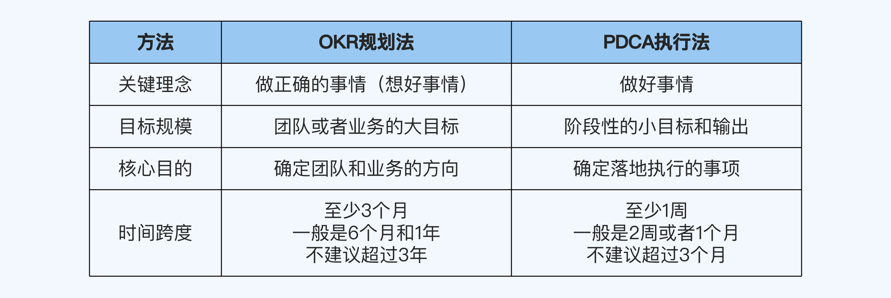
把 OKR 定位成专门用来做规划的方法，把 PDCA 定位成专门用来做执行的方法。¶
执行（Do）:
按照计划落地各项具体的活动 技巧: a. 根据情况采取相应的管理风格 独裁式、民主式、专家式、教练式和授权式 b. 做好信息同步 对于问题相关的信息，必须立即同步 对于任务相关的信息，可以定期同步 如果有里程碑的事件，也需要及时同步检查（Check）:
对照计划来检查实际执行结果: 明确哪些符合预期、哪些不达预期、哪些超出预期以及存在什么问题等 技巧: 使用 5W 分析问题根因 注意: 养成关键信息给上级汇报的习惯行动（Act）:
基于检查的结果，总结经验和教训，明确下一步需要采取的措施。 技巧: a. 做好总结汇报 执行环节是同步信息: 主要是问题、进展和重要的里程碑事件。 行动阶段是总结汇报: 主要是结果是否符合计划的预期， 能总结什么经验教训， 后续是否需要采取什么措施。 b. 每次最多挑选 3 个改进点落实到流程 不要想解决所有问题，而是关注可能重复发生的、影响很大的问题。 建议每次总结的时候，最多挑选 3 条经验教训相关的改进点落实到流程。 （其实 3 条都已经比较多了，如果每年做 10 次类似的总结，就有 30 条改进措施了） 注意: 防止停留表面，改进方法只是提出了，但没有切实的落地。
做事方法-5W根因分析法¶
Note
又叫 5Why 分析法或者丰田五问法，最初是由丰田集团创始人丰田佐吉提出的，后来成为丰田汽车公司获得成功的重要方法。
5W 根因分析法:
通过五个为什么来深挖问题本质，用于分析根本原因
5W 根因分析法在其他很多企业已经得到了广泛应用:
1. 持续改善法（日本持续改善之父今井正明提出）
2. 精益生产法（美国学者研究丰田后提出的管理哲学）
3. 六西格玛法（摩托罗拉提出的管理策略，杰克·韦尔奇推广到通用公司）
注意事项:
1. 问题数量不是关键，找到根本原因才是关键
2. 首先要明确问题本身
3. 开始要解释清楚来探讨根本原因，避免挑起情绪对立，引发“撕逼”
做事方法-5S 问题处理法¶
通过五个步骤来解决问题，化 “危” 为 “机”，用于系统地处理问题
1. 明确问题（Specify）、
2. 拆解问题（Split）、
3. 定位问题（Seek）、
4. 解决问题（Solve）
5. 落地行动（Sort）
第一步：明确问题（Specify）:
1. 可以量化的问题
对于已经用数据量化的问题，关键在于确认数据是否准确
可以量化但是还没量化的： 先量化
2. 无法简单量化的
这类问题是最棘手
可用方法: 调查问卷
第二步：拆解问题（Split）:
核心: 不要单打独斗，要学会利用团队力量
常见的小技巧：
1. 拆解出来的子问题数量 2～5 个，拆太多了就很难保证互相独立
2. 拆解出来的子问题尽量互相独立
3. 明确子问题负责人，组成工作组，定期向上汇报进展
第三步：定位问题（Seek）:
核心: 找到问题的根本原因
技巧:
5W 根因分析法
第四步：解决问题（Solve）:
核心: 提出问题的解决方案
技巧:
使用 3C 方案设计法 设计多个方案
第五步：落地行动（Sort）:
核心: 确定重点和优先级
技巧:
领导并不关心你做了多少件事，他们关心的是，问题有没有真正解决
先做优先级排序，然后挑选优先级 TOP N 的事情去做，尽快看到成效，让问题不断地改善
做事方法-4D 总结法¶
Note
通过四个维度来整理做事的收获，能够帮助你在完成任务后进一步全方位地提升自己的能力，用于事后总结
4 个维度（Dimension）:
1. 结果
2. 数据
3. 技术
4. 成长
维度一：结果:
业务开发团队:
1. 业务开发项目
2. 技术优化方案
3. 管理措施
中间件开发团队:
1. 性能、
2. 可用性
3. 成本
技术支撑团队:
1. 质量、
2. 效率
3. 成本
维度二：数据:
养成用数据来说明的习惯
平时积累了大量数据总结，用的时候就可以信手拈来
维度三：技术:
结合实践经验，完善「领域分层图」、「细节分层图」和「方案对比的思维导图」
维度四：成长:
通过总结得到的业务理解信息和能力越积越多，
到了一定阶段就可以量变导致质变，业务理解能力大大提升
总结数量积累到一定程度的时候，再系统地整理一下，
写成文章发表或者拿去给团队做培训，那样效果会更好
Note
【区别】PDCA的行动阶段是总结汇报，主要是结果是否符合计划的预期，能总结什么经验教训，后续是否需要采取什么措施。4D总结法的结果这个维度重点关注的是事情带来的价值。区别：前者是检查是否达到预期，决定是否继续执行Plan。后者是整个任务已经做完，总结成果。
做事方法-金字塔汇报法¶
Note
汇报的逻辑和总结的逻辑是不同的，总结主要是面向自己做梳理，更强调自己个人的贡献，以及事情的价值和细节；而汇报主要是面向领导做组织提炼，更看重团队整体的结果，以及事情的逻辑和关键。
金字塔原理是美国人巴巴拉・明托提出的一种关于思考逻辑的方法论。
参考麦肯锡的金字塔原理所提出的方法，
通过遵循四个原则来展示工作成果，从而更容易获得高级别管理人员的认可，用于事后汇报
Note
核心思想是任何事情都可以归纳出一个中心思想，中心思想可由三至七个论点支持，每个论点可以由三至七个论据支撑，这样延伸下去，形状像一个金字塔，所以才叫金字塔原理。
Note
它背后的 4 条基本原则才是关键。这些原则保证了你的汇报结构是重点突出、逻辑清晰、主次分明的，能够让别人快速地抓住重点，清楚地理解内容，牢固地记住信息。
4 条基本原则:
1. 结论先行
六句口诀:
a. 先重要（结论）后次要（结论）
b. 先全局后细节
“不要讲这么多细节，挑重点讲”
c. 先总体（结论）后细分（结论）
d. 先论点后论据
“能不能用一两句话概括一下这一年的工作”
e. 先结论后原因
f. 先结果后过程
“听下来给我的感觉是，团队很辛苦、很努力，但最后拿到来什么结果，我却没怎么看到！”
2. 自顶向下
光有结论是不行的，这个结论还得让别人信服。
所以我们采用自顶向下的结构来组织逻辑，用下层的信息来支撑上层的结论。
3. 归类分组
将类似的论点或者论据抽象、归纳、提炼、总结成一组
分组数量3-7个，最好是 5 个以内
4. 逻辑递进
一致性是指，同级别的内容必须属于同一逻辑范围
如苹果、香蕉、葡萄、菠萝都属于 “水果” 范围，而牛奶就不属于 “水果”
顺序性是指，同级别的内容是按照某种顺序排列的
如: 北上广深：按照地理位置从北到南排序
标准的汇报内容包括:
1. 总体结论
2. 具体分析
3. 关键事项
4. 总结改进
做事方法-四线复盘法¶
Note
在事后总结阶段，正常情况下我们主要是做收获总结和成果汇报即可，但是如果发生了明显的问题，就需要做问题复盘。问题复盘的意义就在于找到问题的原因然后加以改进，避免同样的问题反复出现，降低问题的发生的概率和影响。
通过四个角度来复盘重大问题，达到公平公正的处理效果，避免背锅和甩锅，
用于重大问题发生后的复盘改进。
一次成功的问题复盘需要达成以下 4 个目标:
1. 讲清楚事实
事实是复盘的基础，
如果连事实都没有讲清楚就开始分析、定责和改进，无异于搭建空中楼阁，做得再漂亮也是没有意义的。
2. 全面且深入地分析
首先需要保证没有遗漏问题，
其次需要深入分析问题根因，否则以后问题还是会以其他方式反复出现。
3. 得出让各方心服口服的定责结论
需要有明确的定责标准，避免拍脑袋定责，或者按照级别和关系来定责。
4. 制定可以落地的改进措施
避免提出一些虚头巴脑的措施，看起来高大上，实际上却不知道怎么落地，后续也无法跟踪
四线复盘法:
1. 时间线
2. 问题链
3. 责任链
4. 改进线
时间线:
时间线，也就是问题发生的经过，包括: 问题发现、问题处理过程中采取的各种关键措施、问题恢复的时间和问题影响的结果
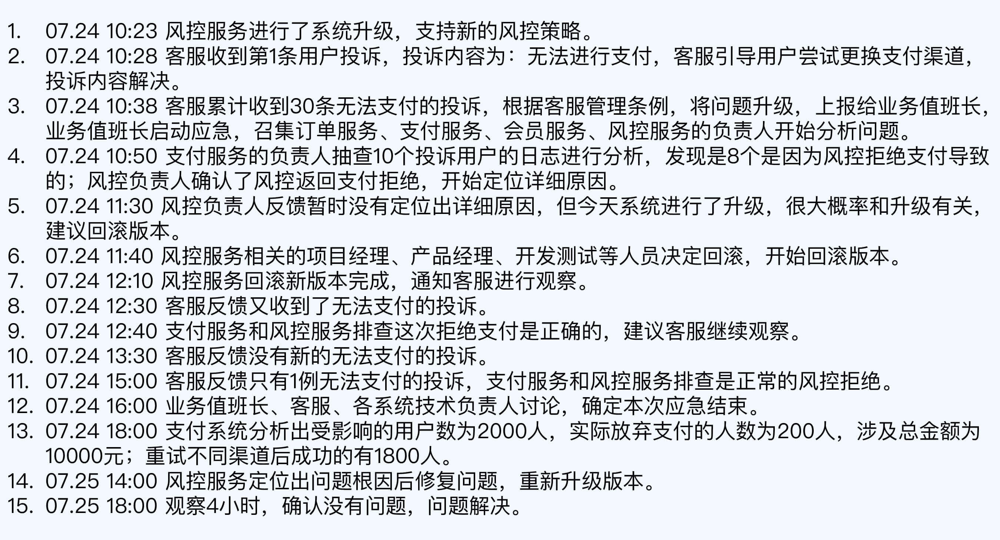
完整地回顾问题产生、处理和收尾的整个过程，梳理了时间线¶
问题链:
问题的传导路径 通常情况下，一个问题往往不是单一原因导致的，而是多个原因“碰巧”组合在一起所导致的， 所以分析整个问题的传导路径，才能全面地了解产生问题的过程。 路径逻辑有两类： a. 业务流程 端到端的业务处理的过程，分析的对象是各个关联的系统 b. 项目流程 端到端的项目开发的过程，分析的对象是项目各个阶段相关的人员， 比如开发、测试、产品和运维等
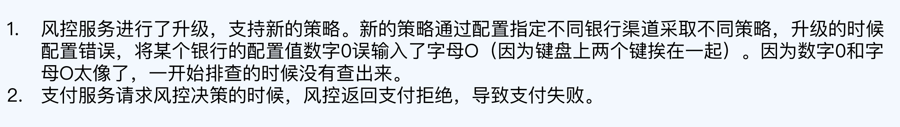
先按照业务流程来分析问题链，由于系统架构和这次问题都比较简单，所以问题链只涉及风控服务和支付服务¶
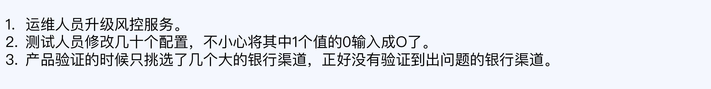
针对风控服务的问题，我们再按照项目流程来分析问题链¶
责任链:
定责是问题复盘中最棘手的部分，因为定责的结果会直接影响团队和个人的绩效， 所以做到公平公正、让各方都心服口服是一项很大的挑战。 常见的标准包括以下 4 条: a. 违反公司规章 / 制度 / 流程的承担主责 如公司规定必须要有灰度策略才能升级，某业务版本直接全量升级导致发生问题 b. 出现重大纰漏的承担主责 如测试时漏测了某个常见的业务场景，导致上线后发生问题， 测试承担主责，产品承担主责（因为上线前验收阶段没有发现问题）， 开发反而不一定承担责任 c. 问题源头承担主责 如 A 系统磁盘故障导致接口响应很慢且问题持续很长时间， 从而进一步导致 B 系统对外响应也超时， 这种情况下 A 系统应该承担主责，B 系统承担次责 d. 问题放大者承担主责 如 A 系统磁盘故障导致接口响应很慢但只持续了几分钟， 结果诱发了 B 系统的设计缺陷，导致 B 系统瘫痪超过 1 小时， 这种情况下 B 系统应该承担主责
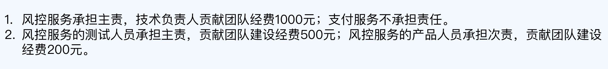
根据时间线中的影响结果，这次问题导致的损失是 10000 元；根据公司故障定级标准，属于轻微级别，惩罚措施是贡献活动经费；结合问题链和定责标准，我们得到了最终的责任链¶
改进线:
问题责任人是指为问题承担责任的人 改进责任人是指负责落实改进措施的人，不一定是同一个 改进计划的思路来源于两个方面：时间线和问题链 具体措施可以是: a. 流程上的调整（增加或删除流程步骤）， b. 技术上的手段（增加功能、优化系统） c. 团队方面的措施（学习、培训、奖惩机制）等 关键: 能够落地执行
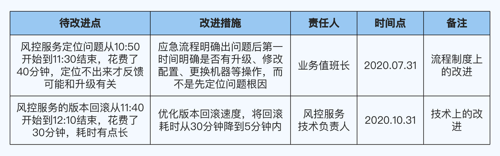
分析了时间线中的步骤，针对两个可以改进的地方制定了改进措施¶
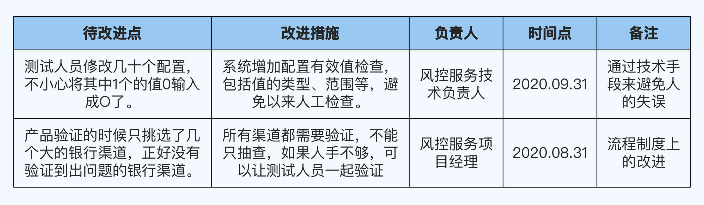
又分析了问题链中的问题，针对另外两个可以改进的地方制定了改进措施¶
专项提升-业务:5W1H8C1D 分析法¶
5W:
1. When（何时）
2. Where（何地）
3. Who（何人）
4. What（何事）
5. Why（何因）
Note
5W 代表需求产生的背景和功能上线后的运行环境
特别关注需求的背景有两个重要的原因:
1. 客户需求背后的真正问题才是关键
2. 理解需求背景有助于设计更好的方案
1H:
H 代表 How
它和 5W 共同组成了 5W1H 分析法，又叫六何分析法。
在分析和理解业务的时候，How 不是指设计方案，而是指业务需求的处理逻辑。
8C:
5W1H 关注的是需求的功能属性，而 8C 关注的是需求的质量属性
一些约束条件（Constraint）:
1. 性能（Performance）
2. 成本（Cost）
3. 时间（Time）
4. 技术（Technology）
5. 可靠性（Reliability）
6. 安全性（Security）
7. 合规性（Compliance）
8. 兼容性（Compatibility）
1D:
D 代表 Data
反映了业务上线之后的效果（Result）
常见的 Data 包括两个方面:
1. 业务效果，比如 DAU、MAU、活动参与人数、订单数、成交量、成交额和运营效率
2. 系统效果，比如峰值 TPS、接口性能、响应时间、崩溃率、可用性、成本和开发效率
专项提升-业务:AARRR 漏斗模型¶
Note
AARRR 漏斗模型是 PayPal“黑帮”成员之一、美国企业家、天使投资人戴夫·麦克卢尔（Dave McClure）提出的，适合用来做互联网 2C 业务的分析。增长黑客之父肖恩·埃利斯（Sean Ellis）在 2010 年提出“增长黑客”这个概念的时候，就把 AARRR 漏斗模型作为核心模型，他在《增长黑客》这本书中基于这个模型总结了很多成熟的落地技巧。
AARRR 代表:
1. 获取（Acquisition）
2. 激活（Activation）
3. 留存（Retention）
4. 收益（Revenue）
5. 推荐（Refer）
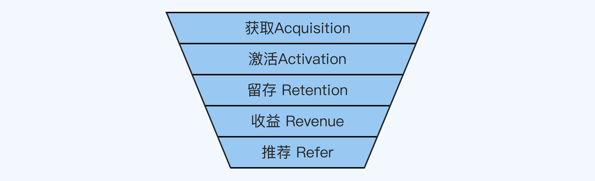
因为每个环节都只有一部分用户会进入下一环节，整体生命周期呈现出漏斗形状，所以叫漏斗模型¶
Note
AARRR 模型的核心就是以用户为中心，以完整的用户生命周期为指导思想，分析用户在各个环节的行为和数据，以此来发现用户需求以及产品需要改进的地方。
获取 (Acquisition):
a. 首先要做的就是触达用户 b. 吸引用户进入产品是获取环节的关键
激活（Activation）:
需要把获取的用户转化为产品的真实用户留存（Retention）:
需要把激活的用户转换为产品的长期用户收益（Revenue）:
将留存的用户转换为收益推荐（Refer）:
通过“以老带新”的方式来实现用户增长
专项提升-业务:宝洁战略模型¶
关于战略的理论研究非常多（越不确定的东西理论越多），比较有名的有迈克尔·波特的“竞争战略”、杰克·特劳特的“定位理论”和普拉哈拉德的“核心能力”等。
Note
宝洁战略模型出自《宝洁制胜战略》。这本书由宝洁传奇 CEO 阿兰·雷富礼（Alan G. Lafley ）和“全球最具影响力 50 大商业思想家”（2009 年顶级咨询公司 Crainer Dearlove 评选）之一的罗杰·马丁（Roger Martin）共同完成。
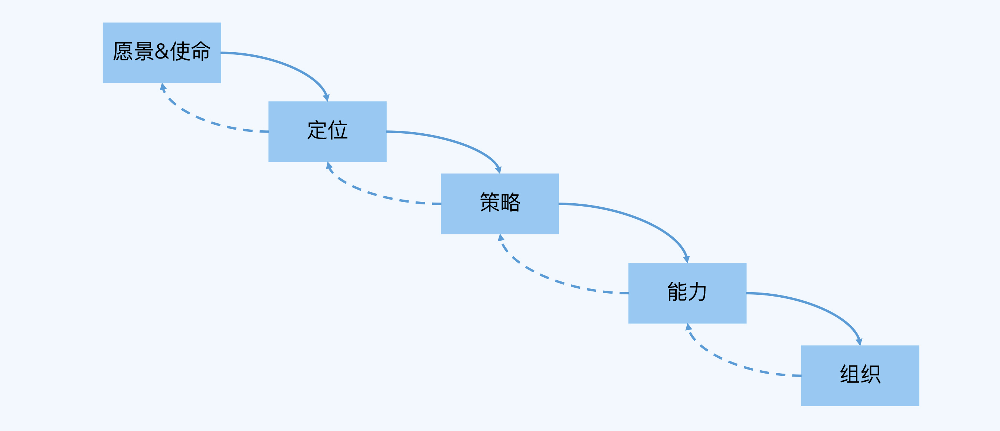
宝洁战略模型的核心思想是，战略就是选择，包括 想做什么 、 能做什么 、 要做什么 和 不做什么 。这一系列的选择决定了企业的行动，企业的行动又决定了最终的业务结果，而如何做出更好的选择，选择的标准是什么，就是宝洁战略模型涵盖的内容¶
愿景 & 使命:
决定了企业要做的事情的范围和目标 愿景：你最终想成为什么？ 使命：你为别人带来什么价值？ 价值观：你做事的准则是什么？ 以阿里巴巴为例： 愿景：成为一家活 102 年的企业。 使命：让天下没有难做的生意。 价值观：六脉神剑（客户第一，团队合作，拥抱合作、敬业、诚信、激情）。
定位:
决定了企业决定进军哪类市场 定位在不同的市场上，会采取了不同的竞争策略，比如: 京东的优势是正品和物流， 淘宝的优势是全品类， 拼多多的优势是低价策略:
决定了企业采取何种方式和手段来赢得竞争 策略是整个战略的核心，因为策略关注的是如何赢得竞争 策略总体上可以分为两类：总成本领先和差异化 行业巨头可以采取总成本领先的策略，因为有规模效应，而其他参与者一般都是采取差异化的策略
能力:
决定了企业是否能够真正将策略落地并取得结果组织:
决定了企业的各个团队能否协同一致高效的落地策略 高层管理团队制定战略（定位 + 策略），然后交给各个部门来展开行动。 但是如果没有适合的流程、组织结构和衡量方法来进行支撑，执行的效率可能非常低，效果可能很差
常见的组织结构调整手段:
1. 专项团队:
针对特定目标成立的虚拟团队，在一段时间内聚焦某个目标
比如“性能优化团队”和“用户体验改进团队”等
2. 横向团队:
团队按照领域来划分，支撑多个业务
比如“Android 团队”和“前端团队”等
3. 纵向团队:
团队按照业务来划分，可能包含多个技术领域的人员
比如某个商家的业务团队可以划分为“拼多多业务团队”和“淘宝业务团队”等
4. 负责人制:
指定某件事情的负责人，授权负责人处理某一方面的事情
专项提升-管理¶
Note
管理真正的作用其实是整合团队的力量，让团队突破单个个体的能力上限，创造出更大的价值。2. 本质是发挥人的潜能，创造团队价值。3. 管理者最好的状况就是手下有厉害的人能做成事；手下没有厉害的人，自己既也能做成事，又能把手下培养的更厉害。4. 团队管理一定要学会适当容忍，学会排优先级，不然自己很累，团队也会觉得管理者在瞎折腾。
怎么提升管理能力的困难主要有三个方面:
第一，管理技能积累不多。
第二，管理知识的多样性。
第三，管理的不确定性。
Note
管理其实是一个很大的范畴，包括企业管理、行政管理、人力资源管理和团队管理等，技术人员需要学习的主要是团队管理。
学习和使用技巧:
1. 业务相关的漏斗手段:
第一个关键点是，掌握业务相关的常见的漏斗手段以及优缺点
2. 核心业务的漏斗数据:
第二个关键点是，掌握核心业务的漏斗数据
每个业务的漏斗手段都会有很多，但是真正起关键作用的还是几个核心手段
对于技术人员，掌握核心业务的核心手段的相关漏斗数据
基本上已经能够形成对业务的整体理解和认知了
范围有多大呢？
建议选择业务量排前 3～5 名的业务
这里的业务量可以是访问量、成交量、成交额和活跃用户数
你需要根据不同的业务特性采用不同的指标，比如:
移动钱包业务一般是用成交笔数来作为衡量指标，
短视频业务一般是用播放量来作为衡量指标。
3. 团队业务的详细漏斗数据:
第三个关键点是，掌握和理解当前团队做的业务的详细漏斗数据
除了知道漏斗数据外，你还要对数据有一定的理解，比如:
TOP3 的业务为什么会成为 TOP3，
TOP1 的业务和 TOP2 的业务数据差异有多大，为什么会有这种差异，
TOP5 的业务中还有哪个增长潜力比较大等
4. 竞争对手的漏斗:
第四个关键点是，对比竞争对手的漏斗
直接分析竞品的 AARRR 漏斗模型是最直接的
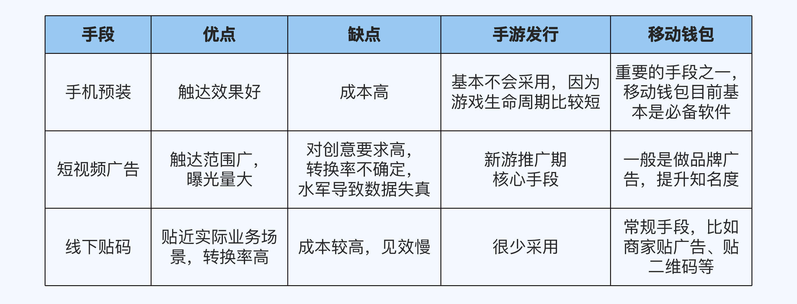
[第一个关键点实例]以手游发行业务和移动钱包业务为例，几种常见的用户获取手段¶
漏斗数据获取渠道:
1. 业务内的各种统计分析平台
2. 内部的业务总结会议和规划会议，这些会议会对业务进行总结和分析。
这是信息量最大的获取时机，
因为这些业务的分析、总结、经验教训等是高级别的负责人讨论后给出的最终结论，
具备权威性和专业性。
3. 对「竞品」公司内的行业分析、第三方的行业分析、上市公司的财报等，都是了解行业信息非常好的渠道
4. 作为技术人员，提升业务理解和业务意识的一个有效手段是经常和产品运营人员聊聊
专项提升-管理:管理四象限¶
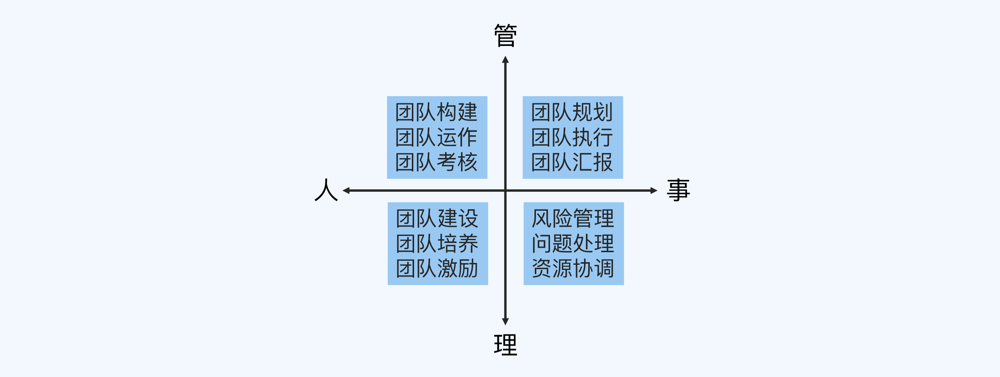
管理四象限¶
管事:
1. 团队规划
团队规划是指，制定团队一定周期内的目标和主要事项
方法: OKR 规划法
2. 团队执行
团队执行是指，将团队规划的事项落地，包括人力安排、时间安排、进度跟踪和问题处理等
不管由谁来执行，管理者都是最终结果的第一责任人
方法: 3C 方案设计法和 PDCA 执行法
3. 团队汇报
团队汇报是指，归纳总结团队的工作情况，将信息反馈给上级
汇报对于个人和团队的绩效评价有很大的影响，对于管理者的成长也有很大的意义
方法: 金字塔汇报法
管人:
1. 团队构建
团队构建是指，如何打造符合业务发展需要的团队
招聘只是团队构建的一部分工作，
人员优化、人员汰换和团队梯队设计这些事情也很重要，你需要持续不断地对团队进行打磨
2. 团队运作
团队运作是指，通过制定团队的标准流程和奖惩机制等，让团队成员做事更加规范、更有效率。
一是不要盲目学习其他公司的方法，比如:
华为管理法、谷歌管理法，因为它们本身可能和公司层面的机制是冲突的。
二是不要盲目地搞“新官上任三把火”
因为任何管理措施都是有成本的，不是越多越好，
不合理的措施不但不能体现水平，反而会得不偿失，搞得怨声载道。
3. 团队考核
团队考核是指，确定每个团队成员的绩效
管理者需要在熟悉公司文化和制度的基础上，尽可能多地在平时的工作中了解下属的实际工作状态和内容，
在考核时做到实事求是，基于事实判断，避免拍脑袋凭感觉来进行评价。
否则等到做绩效沟通的时候，你发现没法得到认可，很容易被下属用各种事实“打脸”。
理事:
1. 风险管理
风险管理是指，提前识别可能出现的问题，并采取预防措施。
P9 以下的管理者需要关注的风险主要有两类：
一类是核心人员流失，
它导致很多重要工作无法开展，
所以你需要提前培养核心人员的备份人员，搭建合理的团队梯度
另一类是项目进度太紧，
它导致质量低下、团队士气低下和团队摩擦增多等问题，
可通过提前招聘、借调人员和据理力争修改项目计划或者项目范围等方式来应对
2. 问题处理
问题处理是指，解决团队已经发生的各种问题，比如:
人员变动、团队成员之间有矛盾、项目延迟和线上出现严重事故等
对于管理者来说，正确的做法是:
一方面要认识到出问题的必然性，
力求不要出大问题，容忍部分小问题，认真地分析问题，谨慎地制定流程规范；
另一方面要意识到自己是任何团队问题的第一责任人
你可以指出下属做的不足的地方，但不能把责任全部推给下属。
3. 资源协调
资源协调是指，申请各种团队需要的资源，比如:
申请多几台手机用于测试，申请新的服务器搭建环境，申请外包来临时支援项目等。
理人:
1. 团队建设
团队建设是指，通过举行各种形式的活动来增强团队成员的团队意识和协作精神，
让团队成员相互之间更加了解和信任，同时释放工作压力。
2. 团队培养
团队培养是指，通过各种手段提升团队成员的能力，
让团队成员既能够更好的完成工作任务，也能够逐步晋升到更高的级别。
团队培养也是管理者的核心工作之一，但在实践中经常被忽视，
因为团队培养的投入很明显，但产出却不明显。
如果团队工作比较繁重，最先缩减的往往就是团队培养相关的事情。
常见的培养手段有以下 4 种：
a. 定向自主学习
管理者指定学习目标和计划，团队成员自主学习，到了计划的时间后进行检查。
这种方式比较适合 P5/P6 成员的培养，比如:
TL 指定某几个团队成员在 3 个月内学习设计模式，
然后让他们统一给团队做培训或分享
b. 培训
根据团队需要安排相关培训，包括:
业务培训、技术培训、晋升培训等。
这种方式适合大部分团队成员
c. 以战代练
通过带着成员做或者授权成员负责某个事项，让对方在做事情的过程中边做边学，以战代练
这种方式适合培养团队核心人员，尤其是对于有晋升需求的骨干人员
应该优先安排对晋升有帮助的工作任务
d. 技术交流
提供技术交流的机会，让成员能够开拓技术视野，认识更多业界同行，提升自己影响力
比如参加技术大会和技术交流会议等
这种方式适合培养团队核心人员，一般要求 P7+ 以上的级别。
3. 团队激励
团队激励是指，激发团队成员的潜能和战斗力，让团队更有激情和效率。
常见的激励的手段包括:
发表一篇激情四射的演说、
在失败的时候鼓舞团队、
在成功的时候由衷的表扬团队、
给团队成员颁发一些奖项等。
最有效的激励手段还是带领团队拿到结果和绩效
Important
管理核心原则：要事优先。应该在一个周期内（至少半年以上）只关注不超过 3 件的重要事情，这些事情都应该是你通过 OKR 方法基于业务目标拆解出来的
示例:
1. 某个新业务刚成立的时候
团队构建是最重要的，团队建设就没那么关键了，
因为此时人都没几个，当务之急是尽快把人招到。
2. 当团队人员基本稳定后
团队培养就变得更加重要了，团队构建可能相比就没那么重要了
3. 对于一个刚经历挫折的团队
团队建设和团队激励可能就更加重要，而团队运作和培养就可以暂时缓一缓
4. 对于 P8/P9 级别的管理者
由于基本上负责了某条技术线，团队规划就显得特别重要
5. 对于 P6/P7 级别的管理者来说
核心还是带领团队完成任务，团队执行就比团队规划更加重要
专项提升-管理:管理五模式¶
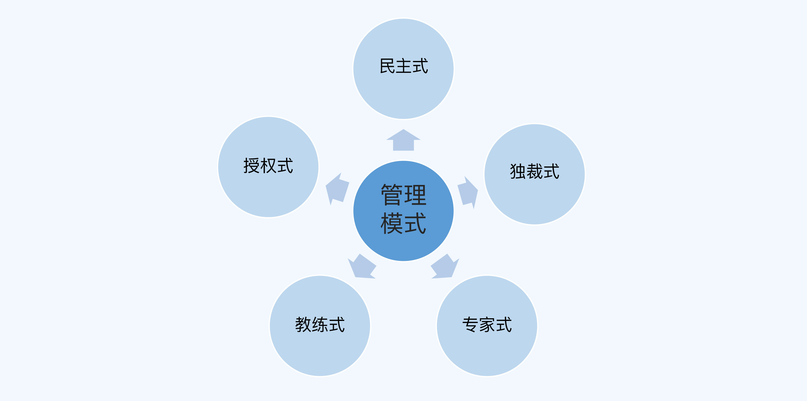
管理五模式¶
管理四象限，帮你明确了管理的工作范畴，带你熟悉了各项工作的关键点。
具体开展工作时，并非管理者一人规划好各项工作，然后交给团队去执行就可以了的原因:
1. 每个人的精力都是有限的。
如果你什么事情都自己一肩挑，时间和精力上会顾不过来
2. 没有人是全知全能的。
就算你精力旺盛，也会遇到不擅长的事情。
3. 团队成员的认可度和积极性也很重要。
就算你什么都能规划好，但具体工作还是要交给团队成员来执行，
如果你的想法不能得到充分理解和积极响应，大家暗地里抵制其实也很容易
管理模式（管理风格）:
1. 独裁式。
管理者直接指定下属或团队的具体工作，包括做什么事、怎么做、什么时候做和输出什么结果等，
全都一一明确，团队成员不能提出不同意见和方案。
2. 民主式。
管理者组织团队成员针对某项工作进行讨论，然后和团队成员一起选出最终的方案。
管理者的意见并不是优先级最高的，团队通常采用集体投票的方式来做决策。
3. 专家式。
管理者作为某方面的专家，组织团队成员针对某项工作进行讨论，
并由团队成员来做决策，选出最终的方案；
管理者不参与决策，只是在讨论的过程中提供专业指导
4. 教练式。
管理者作为某方面的专家，组织团队成员针对某项工作进行讨论，
然后自己做决策，选出最终的方案；团队成员不参与决策。
有点类似于 NBA 球队安排战术的时候，球员可以参与讨论，但是最终拍板的是教练。
5. 授权式。
管理者把某项工作全权授权给指定人员，由被授权者来做决策，
管理者在任务执行过程中的关键节点进行监督，防止出现较大偏差。
6. 放羊式。
管理者把某项工作交给指定人员，然后就不管了，等到最终结果出来的时候可能会去了解一下。
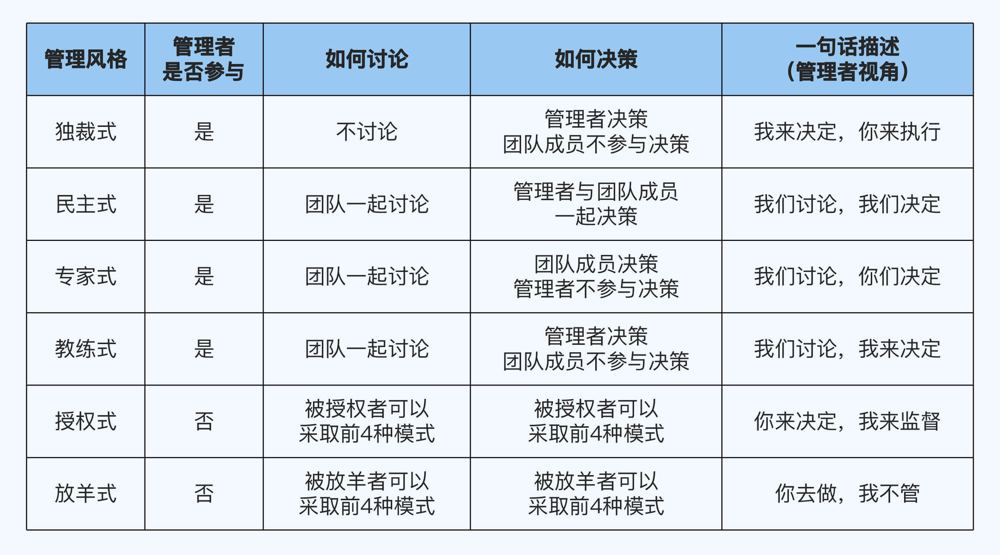
6 种管理模式¶
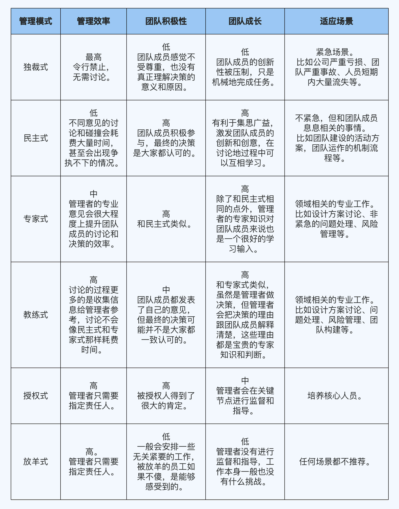
6 种管理模式对比¶
注意事项:
1. 独裁式。
要求管理者有丰富的经验和强大的影响力，如果只靠权力来压制，很可能会引火烧身。
新晋管理者和空降管理者一定要克制想要 “大干一场” 的冲动，对于独裁式管理一定要谨慎。
一般只有你对团队的实际情况很清楚，团队成员对你也很认可，并且遇到紧急情况的时候，才可以采用
2. 民主式。
注意一个坑，那就是 “假民主，真独裁”
表面上大家都说了意见，但实际上只要管理者说出自己的意见，很多成员就开始跟着附和
技巧: 要么不说自己的意见，要么等到最后才说，先让团队成员说
第二个技巧: 匿名投票
3. 专家式。
对管理者的专业能力要求很高
如不是自己熟知的领域，不要假装内行，应该找领域真正认可的 “专家” 和 “教练” 帮助
4. 教练式。
对管理者的专业能力要求很高
5. 授权式。
注意: 不要在无意中把授权式变成了放羊式
正确的做法:
定期进行监督，可以让被授权者按照 PDCA 的方式来执行，
在关键时间节点和里程碑的时候进行汇报。
6. 放羊式。
不要用
别人的心得¶
技术的确定性，业务指标的AARRR模型这些都有套路在，唯一困难的是人心不确定性，人心向背啊。之前带过50人的团队，感受是:
1. 绩效&结果得拿到
不然即使大家因为个人魅力跟着自己混，但是毕竟大家是趋利的，久而久之真的是画大饼了
2. 心腹的培养很重要
信任人要敢于放权，但是放下去的权利得收的回，
约束机制是该团队的问题点、情况得非常了解，否认容易被忽悠；
另外自己要带领一些核心项目，产出结果，否则下属功高震主。
3. 对于基层员工，安全感、危机感需要并存
根据人的性格而定:
a. 信息不足的需要给安全感，多鼓励
b. 对于磨洋工者，需要给危机感
c. 对于优秀者，需要给成就感
4. 沟通
一定要跟团队沟通，频繁的沟通，深入的沟通，了解对方的真实想法特别艰难
5. 人前有做坏人，人后要做好人
老板永远要做好人，不然老板很容易干掉自己
对于培养备份人员 华仔有什么经验分享一下:
备份人员的培养:
首先要跟备份人员以及核心人员直接说明定位和角色，
这样既可以激励备份人员，也可以避免让核心人员觉得你在弱化他的作用。
然后，先采取“教练式”的方式
安排一些事情，通过事情将你的经验传授给他；也可以让核心人员带他做；
当觉得差不多的时候，可以用“授权式”来安排一些事情，检验一下实际的培养效果
其他¶
推荐语¶
常犯以下 4 点错误:
1. 罗列事项
2. 写得太虚
如 “具备优良的系统设计能力，对 XXX 业务非常熟悉，具备非常丰富的分布式经验。”
3. 没有条理
所有的内容都挤在一段话里面，不能明显的看出有拿几个关键点，需要看材料的人费力去找
4. 画蛇添足
写一些跟目标级别几乎没有关联的内容
三大写作要点:
1. 提炼重点，抽象出 3～5 个和晋升强相关的关键能力点
2. 虚实结合，提炼出关键能力后，必须要给 1～2 个案例证明
案例尽量用数据证明，这里的数据可以是业务数据和系统数据，也可以是团队规模的数据；
如果实在不能用数据证明，那也要描述事项的关键点，比如:
“从 0 到 1 搭建系统”
“负责 XX 系统演进的架构设计，完成 XX 系统从 1.0 到 2.0 的升级”
3. 条理分明，通过排版让成果与亮点一目了然，不要让管理者费劲去找
案例:
小明同学具备优秀的设计能力，
承担过多个关键业务的设计和开发，是团队的核心骨干，
熟练掌握 Java/Redis/MySQL 等系统，
具备高并发系统设计经验，承担了多个关键项目的负责人。
修改案例:
小明同学具备优秀的设计能力，承担过多个关键业务的设计和开发，是团队的核心骨干，他的能力具体体现在以下三个方面：
1. 优秀的设计能力：
熟练掌握 Java/Redis/MySQL 等系统，具备高并发系统设计经验，
其 19 年设计的 618 活动系统，线上峰值流量达到 TPS 20K；
2. 熟练掌握业务：
对业务很熟悉，负责 A 项目 /B 项目 /C 项目的需求分析、方案设计、代码实现，
项目上线后运行稳定；
3. 团队核心：
能够承担关键任务的负责人，是 2019 年业务双十一的保障负责人，
整个双十一活动流量峰值增长 10 倍，系统表现平稳，没有任何问题。
10000小时定律¶
20 小时学习法:
1. 分解步骤: 把技能最大程度地细分，分成若干小步骤
2. 充分学习: 基于分解步骤得到的小步骤，逐一练习
3. 克服困难: 克服练习过程中的各种困难，包括生理、心理、情绪、工具、环境
4. 集中练习: 至少用 20 小时集中学习最重要的小步骤
领域分层图¶
Note
画图本身的技巧和效率并没有那么重要，对你成长帮助最大的，是为了画出这张图而去整理、思考和探索的过程。
方法-拿来主义:
拿来主义是画领域图最简单的方式，如:
找团队内部熟悉某项技术的高手来帮你画，或者根据网上搜到的相关文章或者思维导图来整理
缺点:
1. 自己的理解深度还是不够，因为你缺少了自己去探索的过程
2. 对外界的依赖太高
不是每次都有现成的
3. 这种方法往往只适合热门、成熟的技术领域
对于冷门、新兴的技术领域，你能拿来的内容非常少
画领域分层图的步骤:
1. 搜集资料
推荐你首先都要看权威资料，包括:
官方文档、经典书籍、研究论文等，
比如: ClickHouse 的官方文档、《UNIX 环境编程》《TCP/IP 详解》和谷歌的大数据论文
2. 挖掘技术点
看上面资料的同时，整理出技术点来
有句话说: 学习知识首先是学习它的定义（特别是在学习一个完全新的技术时）
3. 针对技术点学习
针对技术点学习，会引入其他技术点（学习到什么程度看具体情况）
结合多篇资料，最后形成综合的理解
4. 画出初稿
5. 迭代优化
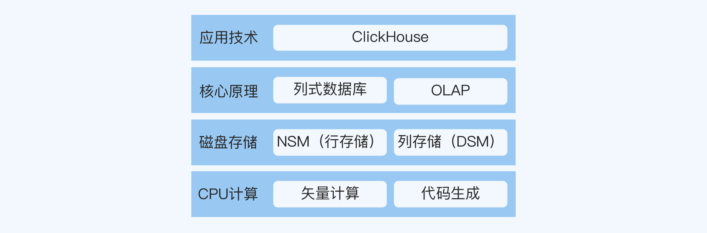
ClickHouse 领域分层图初稿¶
参考¶
《思考，快与慢》
《认知天性：让学习变得轻而易举的心理学规律》
《高效 PDCA 工作术》
如何学习才高效：《认知天性》前几章
如何学习才高效：《有效学习》
美团四大名著：高效能人士七个习惯，图标说话，学会提问，金字塔原理
成长¶
《异类》
《10000小时天才理论》
《情商》
《优秀到不能被忽视》
《影响力大师》
《巴拉巴西成功定律》
《刻意练习》
美国学者乔希・考夫曼（Josh Kaufman）在《关键 20 小时，快速学会任何技能！》（The First 20 Hours: How to Learn Anything… Fast!）
《随机漫步的傻瓜》